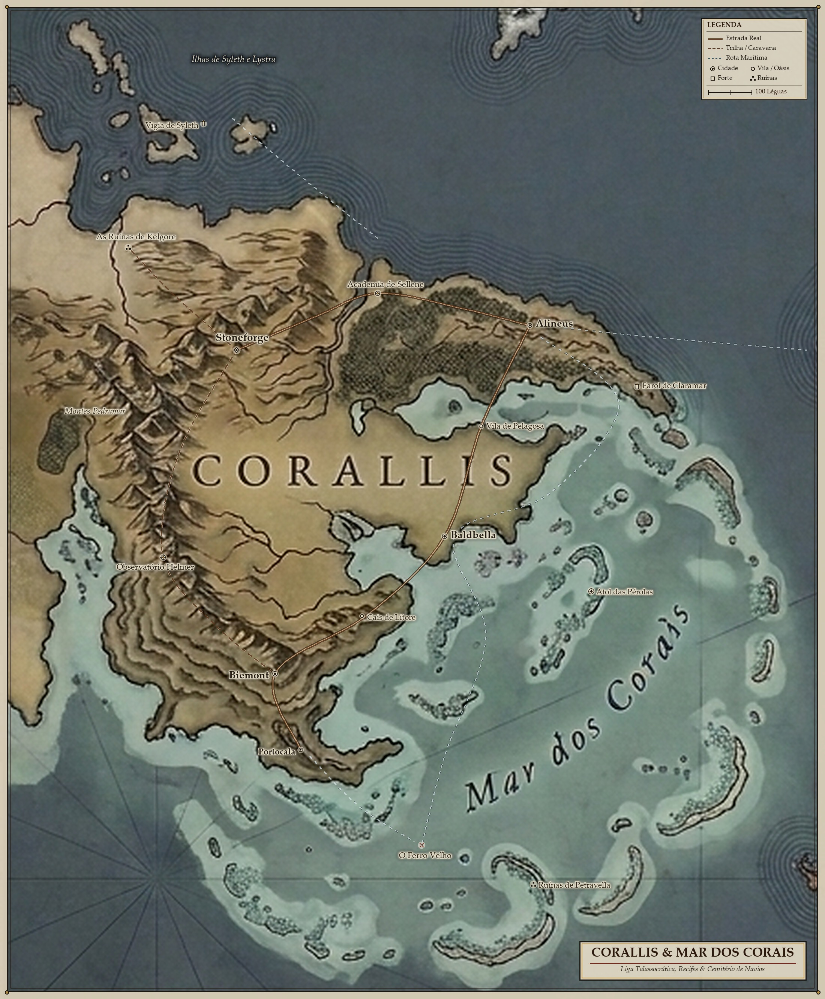

ALENIA RPG

“Cinco terras, um único aço. O volume definitivo para mestres e exploradores de Alenia.”
Livro de Regras

“O aço quebra, os reis sangram e o mar engole até os mais sábios.”
ALENIA RPG — Livro de Regras Oficial (Edição Revisada v2.0)
"O aço quebra, os reis sangram e o mar engole até os mais sábios. Só sobrevive em Alenia quem sabe quando atacar, quando aparar e quando calar."
1. Visão Geral e Proposta do Sistema
Alenia é um sistema próprio de RPG medieval sombrio movido por d20, desenhado para campanhas de exploração continental, intriga política, sobrevivência e combates táticos mortais — integrado ao RRPG Firecast.
Pilares Fundamentais
- Povos Jogáveis Exclusivamente Humanos: todas as civilizações vivas e personagens jogáveis são humanos, diferenciados por origem cultural, atributos e ofício. Feras naturais e raros horrores lendários existem apenas como ameaças do mundo.
- Sem Classes Rígidas + 36 Kits Universais: qualquer explorador pode aprender qualquer perícia ou manobra. Os Kits representam ofícios universais que definem o Dado de Vida (
1d6a1d12), o multiplicador de Inteligência para perícias, a formação inicial e uma habilidade de ofício — e podem ser trocados ou complementados ao longo da campanha. - Curva Clara de Poder (Recruta → Lenda → Épico): personagens iniciantes (Recrutas) são frágeis e sujeitos a morte súbita; veteranos (Lendas, Nív. 11–20) suportam provações maiores e dominam maestrias raras; figuras Épicas (Nív. 21–30) alcançam feitos míticos — mas o Golpe Devastador (
> 2/3do PV), venenos, ferimentos graves e inimigos do mesmo patamar mantêm a tensão real. - Combate Tático e Sem Pólvora: Defesa situacional (Aparar vs. Esquiva), armaduras comuns jamais dão RD (RD é restrita a itens extremamente raros), armas possuem margens e multiplicadores de crítico próprios, Múltiplas Ações possuem teto vinculado ao treino e ações defensivas sacrificam o ataque para proteger a si ou aliados.
- Magia Estilo Game of Thrones: raríssima, ancestral, ritualística, cara e envolta em lendas.
2. Atributos Base e Geração de Personagem
Todo personagem possui 6 Atributos Base na escala inicial 3 a 18 (com teto progressivo por Patamar ao evoluir: 18 em Recruta, 20 em Lenda e 22 em Épico):
| Atributo | Sigla | Escopo Principal |
|---|---|---|
| Força | FOR | Poder muscular, ataques corpo a corpo pesados, dano, atletismo, capacidade de carga |
| Destreza | DES | Agilidade, iniciativa, Defesa, ataques à distância e ágeis, furtividade, acrobacia |
| Constituição | CON | Vigor, Pontos de Vida (PV), testes de Moribundo, venenos, fadiga e Golpe Devastador |
| Inteligência | INT | Raciocínio, Pontos de Perícia, erudição, engenharia, alquimia, investigação |
| Sabedoria | SAB | Percepção, intuição, sobrevivência, medicina, navegação, força de vontade |
| Carisma | CAR | Presença, persuasão, liderança, enganação, intimidação, etiqueta e arte |
Cálculo do Modificador
| Valor | 3 | 4–5 | 6–7 | 8–9 | 10–11 | 12–13 | 14–15 | 16–17 | 18–19 | 20–21 | 22 |
|---|---|---|---|---|---|---|---|---|---|---|---|
| Mod. | -4 | -3 | -2 | -1 | 0 | +1 | +2 | +3 | +4 | +5 | +6 |
Geração Inicial de Atributos
- Regra Oficial (Rolagem): role
4d6e descarte o menor dado para cada um dos 6 atributos. Na ficha do RRPG Firecast, o botão "Rolar Atributos Iniciais (4d6)" só funciona quando todos os 6 campos estiverem vazios, preenche os valores automaticamente e anuncia todos os dados (incluindo o descartado) no chat da mesa. - Regra Opcional (Compra de Pontos): comece com todos os 6 atributos em
8e distribua 27 pontos (9–13= 1 pt cada;14–15= 2 pts cada; máximo inicial15).
3. Atributos Especiais (Opcionais — Evolução Exclusiva por Feitos)
Nem todo personagem possui Atributos Especiais. Eles operam na escala 0 a 5 (0 = não possui; 1–5 = nível de poder/peso narrativo e bônus direto somado em testes pertinentes).
| Atributo Especial | O que Representa | Exemplos de Feitos para Evoluir |
|---|---|---|
Status (0–5) | Linhagem nobre, patente militar, prestígio acadêmico, renome tribal ou crédito mercantil. | Salvar uma casa nobre em Altavanne, conquistar patente em Corallis, liderar caravanas em Gaddra. |
Fé Verdadeira (0–5) | Convicção espiritual autêntica e incorruptível (plural — válida em qualquer tradição sincera de Alenia), capaz de resistir ao horror e produzir bênçãos sutis ou presságios. | Sustentar juramentos sob sacrifício real, enfrentar horrores de Incognito sem recuar, realizar atos de devoção genuína. |
Influência no Submundo (0–5) | Redes de informantes, respeito entre piratas do Mar dos Corais/Ravena, contrabandistas e guildas ocultas de Kalis. | Controlar uma rota clandestina, pagar dívidas de sangue, derrubar um rival no submundo. |
Dom Antigo (0–5) | (Raríssimo — exige aval do Mestre) Sangue ancestral, visões proféticas, ecos de Incognito ou afinidade com rituais esquecidos. | Sobreviver a um rito ancestral, decifrar ruínas de Kelgore ou Incognito, pagar o preço de uma visão verdadeira. |
Especial Livre (0–5) | Espaço aberto na ficha para um atributo exclusivo da campanha criado pelo Mestre (ex.: Honra do Clã, Dívida de Sangue, Segredo de Kalgard). | Definido pelo Mestre. |
4. Testes, Dificuldades e Perícias (Recalibradas)
Teste Básico
| Dificuldade (CD) | Grau do Desafio | Exemplos em Alenia |
|---|---|---|
| 10 | Rotineira / Fácil | Negociar suprimentos comuns em Merlinport, escalar muro baixo |
| 15 | Moderada | Navegar recifes calmos, rastrear trilha recente, estancar sangramento |
| 20 | Difícil | Forjar liga superior, infiltrar mansão em Altavanne, tratar fratura grave |
| 25 | Muito Difícil | Cruzar o Mar dos Corais sob tempestade, decifrar inscrição de Kelgore |
| 30 | Lendária / Extrema | Trabalhar adamante puro em campo, sobreviver a tempestade em Incognito |
Graduação Livre, Graus Automáticos e Teto Progressivo por Nível
Em Alenia, as perícias evoluem por graduação numérica contínua (+0, +1, +2, +3, +4... — você não fica preso a saltos fixos), mas toda perícia respeita um Teto Máximo de Graduação conforme o Nível do personagem. Isso preserva a matemática do d20, impede a concentração abusiva de todos os pontos em uma única perícia (como levar Aparar a +30) e incentiva personagens amplos e verossímeis.
Conforme a graduação investida, a ficha classifica automaticamente o Grau de Domínio, usado como referência para pré-requisitos de Talentos, Defesa Total e travas de Múltiplas Ações:
| Grau Automático | Graduação (Bônus) | Custo por Graduação | Custo Acumulado (do zero) | Requisito Mínimo | |
|---|---|---|---|---|---|
| Destreinado | +0 | — | 0 pts | Nenhum | |
| Iniciante | +1 a +2 | 1 pt / grad. | 1 a 2 pts | Nenhum (ainda não cumpre pré-requisito "Treinado") | |
| Treinado | +3 a +7 | 1 pt / grad. | 3 a 7 pts | Nível 1+ (Kit inicial começa em +3 gratuito) | |
| Especialista | +8 a +11 | 2 pts / grad. | 9 a 15 pts | Nível 5+ (veterano reconhecido) | |
| Mestre | +12 a +16 | 3 pts / grad. | 18 a 30 pts | **Nível 11+ (Lenda: máx. +14 \ | Épico: máx. +16)** |
Teto Progressivo de Graduação por Nível (Regra Obrigatória)
Nenhuma perícia (fixa ou livre) pode ultrapassar o Teto de Graduação correspondente ao nível atual do personagem:
| Nível do Personagem | Patamar | Teto Máximo de Graduação | Regra Rápida |
|---|---|---|---|
| Nív. 1 | Recruta | +4 | Nível + 3 (impede concentração extrema no Nív. 1) |
| Nív. 2 | Recruta | +5 | Nível + 3 |
| Nív. 3 | Recruta | +6 | Nível + 3 |
| Nív. 4 | Recruta | +7 | Nível + 3 (topo de Treinado) |
| Nív. 5 | Recruta | +8 | Libera Especialista |
| Nív. 6 – 7 | Recruta | +9 | Progressão Especialista |
| Nív. 8 – 9 | Recruta | +10 | Progressão Especialista |
| Nív. 10 | Recruta | +11 | Topo de Especialista (Ápice Recruta) |
| Nív. 11 – 13 | Lenda | +12 | Libera Mestre |
| Nív. 14 – 16 | Lenda | +13 | Mestre Veterano |
| Nív. 17 – 20 | Lenda | +14 | Topo de Lenda (Ápice Lenda) |
| Nív. 21 – 25 | Épico | +15 | Mestre Épico |
| Nív. 26 – 30 | Épico | +16 | Teto Absoluto de Alenia (30 pts acumulados) |
(Nota: Perícias recebidas como Treinado (+3) pelo Kit inicial já contam com os 3 pts iniciais pagos — subir uma delas para +4 no Nív. 1 custa 1 pt; chegar a +7 no Nív. 4 custa +4 pts; subir para +8 no Nív. 5 custa +2 pts adicionais; alcançar +12 no Nív. 11 custa 15 pts além do +3 inicial — ou 18 pts partindo do zero — e o teto absoluto +16 no Nív. 26–30 custa 30 pts partindo do zero.)
Pontos de Perícia (Uniforme e Equilibrado)
Em todas as fórmulas de perícia, aplica-se sempre a proteção máx(0, Mod. INT), garantindo que Inteligência baixa nunca reduza o ganho abaixo da base do Kit:
- No Nível 1: recebe as perícias treinadas iniciais do Kit (
+3) maismáx(2, ⌊Base do Kit + máx(0, Mod. INT) × Mult. INT⌋)pontos livres. - Ao Subir de Nível: recebe
máx(1, ⌊(Base do Kit + máx(0, Mod. INT) × Mult. INT) × Fator de Patamar⌋)pontos de perícia. - Sem Kit (Média Padrão):
Base = 1,Mult. INT = 0,75,DV = 1d8.
(Exemplo de calibração com o Teto Progressivo: um Erudito com INT 18 (+4) acumula ~80 pts livres até o Nível 11. Como o Teto de Graduação no Nív. 11 é +12 [15 pts a partir de uma perícia do Kit ou 18 pts do zero], ele jamais pode despejar tudo em Aparar; em vez disso, domina 4 a 6 áreas distintas em alto nível, mantendo Defesas e CDs (10 a 30) sempre equilibradas contra o Bestiário até o Nív. 30, onde o bônus máximo humano atinge Mod. +6 + Grad. +16 = +22!)
Lista Oficial de Perícias (34 Perícias + Perícias Livres Ilimitadas)
Além das 34 perícias oficiais abaixo, o jogador pode criar quantas perícias personalizadas quiser na ficha do Firecast (ex.: Forja de Adamante, Pilotagem nos Corais, Dialeto de Yõketsu), seguindo os mesmos custos e travas de patamar:
| Categoria | Perícias (Atributo Base) |
|---|---|
| Combate (6) | Armas Brancas (FOR/DES), Armas à Distância (DES), Luta Desarmada (FOR/DES), Aparar (FOR/DES), Esquiva (DES), Escudos (FOR) |
| Físicas & Exploração (8) | Atletismo (FOR), Acrobacia (DES), Furtividade (DES), Escalada (FOR), Natação (FOR), Cavalgar (DES), Sobrevivência (SAB), Navegação & Náutica (SAB/INT) |
| Percepção & Subterfúgio (5) | Percepção (SAB), Investigação (INT), Disfarce (CAR), Ladinagem & Fechaduras (DES), Prestidigitação (DES) |
| Sociais & Intriga (6) | Persuasão (CAR), Enganação (CAR), Intimidação (CAR/FOR), Intuição (SAB), Etiqueta & Corte (CAR), Barganha & Comércio (CAR/INT) |
| Saber, Ciência & Ofícios (9) | Medicina & Cirurgia (INT/SAB), Alquimia & Venenos (INT), Forja & Metalurgia (INT/FOR), Engenharia & Mecânica (INT), Herbalismo & Natureza (SAB), História & Lendas (INT), Geografia & Cartografia (INT), Idiomas & Cifras (INT), Religião & Ocultismo (SAB/INT) |
5. Sistema de Evolução, Experiência (XP) e Níveis 1 a 30
5.1 Como Ganhar XP — Os 5 Pilares (Muito Além do Combate)
Em Alenia, a evolução não é engessada em matar inimigos. Personagens são exploradores, diplomatas, médicos, navegadores e sobreviventes — portanto, a Experiência (XP) é concedida igualmente por cinco pilares:
| Pilar de Experiência | Exemplos Concretos em Mesa | Recruta (1–10) | Lenda (11–20) | Épico (21–30) |
|---|---|---|---|---|
| 1. Exploração & Viagem | Mapear rota inédita, atravessar tempestade/deserto sem perdas, descobrir ruína, local oculto ou recurso estratégico | 100 – 400 XP | 400 – 1.200 XP | 1.200 – 3.500 XP |
| 2. Armadilhas, Ofício & Mistérios | Desarmar armadilha letal, decifrar cifra ou inscrição antiga, solucionar investigação, cirurgia extrema ou salvar vidas | 75 – 350 XP | 350 – 1.000 XP | 1.000 – 3.000 XP |
| 3. Vitórias Sociais & Intriga | Firmar tratado, vencer duelo de corte, negociar trégua sem sangue, desmontar conspiração ou recrutar aliado-chave | 100 – 400 XP | 400 – 1.200 XP | 1.200 – 3.500 XP |
| 4. Combates Superados | Derrotar, capturar, afugentar ou contornar ameaças (contornar ou vencer sem matar rende 100% da XP) | 50 – 500 XP | 400 – 1.800 XP | 1.500 – 5.000 XP |
| 5. Contratos, Objetivos & Interpretação | Concluir missão/arco, avançar o objetivo pessoal do explorador, honrar juramento ou grande dilema moral | 150 – 500 XP | 600 – 1.800 XP | 2.000 – 5.500 XP |
- Referência Rápida para Ameaças Superadas (por grupo, dividida ou individual a critério do Mestre): Ameaça Comum/Recruta (
75–150 XP), Elite/Fera Perigosa (200–450 XP), Ameaça de Patamar Lenda (800–1.800 XP), Ameaça Épica (3.000–6.000 XP). - Ritmo Esperado de Campanha: somando 3 a 4 pilares por sessão, um grupo evolui aproximadamente a cada 1–2 sessões nos níveis iniciais (
1–4), 2–3 sessões no meio de Recruta (5–10) e 3–4 sessões nos patamares Lenda e Épico. - Regra Opcional (Marcos de Campanha): mesas que preferirem dispensar a contagem de XP podem conceder níveis diretamente ao encerrar arcos narrativos relevantes (a cada 2–4 sessões).
5.2 Tabela Completa de Evolução (Níveis 1 a 30)
| Nível | XP Acumulada | XP Próx. Nível | Patamar | Teto Atrib. | Teto Grad. | Ganhos Especiais do Nível (além de PV + Perícias) |
|---|---|---|---|---|---|---|
| 1 | 0 | 300 | Recruta | 18 (+4) | +4 | Kit Inicial (+3 grátis nas perícias do Kit) + Pontos Livres |
| 2 | 300 | +500 | Recruta | 18 (+4) | +5 | +1 Talento |
| 3 | 800 | +700 | Recruta | 18 (+4) | +6 | +1 Atributo Base (máx. 18) |
| 4 | 1.500 | +1.000 | Recruta | 18 (+4) | +7 | +1 Talento (topo de Treinado) |
| 5 | 2.500 | +1.300 | Recruta | 18 (+4) | +8 | Libera Grau Especialista (+8 a +11) |
| 6 | 3.800 | +1.700 | Recruta | 18 (+4) | +9 | +1 Talento + +1 Atributo Base (máx. 18) |
| 7 | 5.500 | +2.000 | Recruta | 18 (+4) | +9 | Evolução de PV e Perícias |
| 8 | 7.500 | +2.500 | Recruta | 18 (+4) | +10 | +1 Talento |
| 9 | 10.000 | +3.000 | Recruta | 18 (+4) | +10 | +1 Atributo Base (máx. 18) |
| 10 | 13.000 | +4.000 | Recruta | 18 (+4) | +11 | +1 Talento (Ápice Recruta — topo de Especialista) |
| 11 | 17.000 | +4.500 | Lenda | 20 (+5) | +12 | Perícias 1,5× • Maestria +1 dado • Libera Mestre (+12 a +14) & Kits de Lenda |
| 12 | 21.500 | +5.000 | Lenda | 20 (+5) | +12 | +1 Talento + +1 Atributo Base (máx. 20) |
| 13 | 26.500 | +5.500 | Lenda | 20 (+5) | +12 | Evolução de PV e Perícias (1,5×) |
| 14 | 32.000 | +6.000 | Lenda | 20 (+5) | +13 | +1 Talento |
| 15 | 38.000 | +7.000 | Lenda | 20 (+5) | +13 | +1 Atributo Base (máx. 20) |
| 16 | 45.000 | +7.500 | Lenda | 20 (+5) | +13 | +1 Talento |
| 17 | 52.500 | +8.500 | Lenda | 20 (+5) | +14 | Evolução de PV e Perícias (1,5×) |
| 18 | 61.000 | +9.000 | Lenda | 20 (+5) | +14 | +1 Talento + +1 Atributo Base (máx. 20) |
| 19 | 70.000 | +10.000 | Lenda | 20 (+5) | +14 | Evolução de PV e Perícias (1,5×) |
| 20 | 80.000 | +12.000 | Lenda | 20 (+5) | +14 | +1 Talento (Ápice Lenda) |
| 21 | 92.000 | +13.000 | Épico | 22 (+6) | +15 | Perícias 2× • Maestria +2 dados • +1 Atributo Base • Kits Épicos |
| 22 | 105.000 | +15.000 | Épico | 22 (+6) | +15 | +1 Talento |
| 23 | 120.000 | +16.000 | Épico | 22 (+6) | +15 | Evolução de PV e Perícias (2×) |
| 24 | 136.000 | +18.000 | Épico | 22 (+6) | +15 | +1 Talento + +1 Atributo Base (máx. 22) |
| 25 | 154.000 | +20.000 | Épico | 22 (+6) | +15 | Evolução de PV e Perícias (2×) |
| 26 | 174.000 | +22.000 | Épico | 22 (+6) | +16 | +1 Talento (atinge o Teto Absoluto +16) |
| 27 | 196.000 | +24.000 | Épico | 22 (+6) | +16 | +1 Atributo Base (máx. 22) |
| 28 | 220.000 | +26.000 | Épico | 22 (+6) | +16 | +1 Talento |
| 29 | 246.000 | +29.000 | Épico | 22 (+6) | +16 | Evolução de PV e Perícias (2×) |
| 30 | 275.000 | — | Épico | 22 (+6) | +16 | +1 Talento + +1 Atributo Base (Ápice Épico) |
5.3 Pontos de Vida por Dado de Vida (Estilo D&D conforme a Natureza do Kit)
- Dado de Vida (DV) do Kit:
- Combatente Brutal (
1d12): Bárbaro / Berserker. - Combatente Pesado (
1d10): Mercenário, Cavaleiro, Soldado, Guarda-Costas, Lutador. - Explorador / Híbrido / Suporte Marcial (
1d8): Sem Kit, Duelista, Arqueiro, Contrabandista, Caçador de Recompensas, Saqueador, Pirata, Navegador, Explorador, Patrulheiro, Domador, Ferreiro, Carpinteiro, Inquisidor, Ermitão. - Especialista / Erudito / Intriga / Corte (
1d6): Ladino, Assassino, Espião, Charlatão, Mercador, Alquimista, Médico, Erudito, Engenheiro, Herbalista, Astrônomo, Nobre, Diplomata, Bardo, Sacerdote, Tocado pelo Dom Antigo.
- Combatente Brutal (
- PV no Nível 1:
Valor Máximo do DV do Kit + Valor Bruto de Constituição(ex.: Mercenário1d10com CON 14 começa com24 PV; Erudito1d6com CON 10 começa com16 PV). - PV ao Subir de Nível: role
1dX + Mod. CON(mínimo1 PVpor nível; opção fixa para quem não quiser rolar: metade arredondada para cima do DV +Mod. CON, ex.:1d10=6 + Mod. CON,1d8=5 + Mod. CON,1d6=4 + Mod. CON).
5.4 Os 3 Patamares Dinâmicos, Tetos e Troca de Kit
| Patamar | Níveis | Teto Atributo | Teto Grad. | Pontos de Perícia | Maestria de Combate (Dano Base) | Papel no Mundo |
|---|---|---|---|---|---|---|
| Recruta | 1 – 10 | 18 (+4) | +4 a +11 | 1× taxa base | Dano normal da arma | Exploradores, soldados e viajantes vulneráveis. Acesso aos 36 Kits Universais. |
| Lenda | 11 – 20 | 20 (+5) | +12 a +14 | 1,5× (+50%) | +1 dado individual do tipo da arma (Especialista/Mestre) | Figuras célebres e temidas; destrava grau Mestre (+12 a +14) e futuros Kits de Lenda. |
| Épico | 21 – 30 | 22 (+6) | +15 a +16 | 2× (o dobro) | +2 dados individuais do tipo da arma (Mestre) | Nomes imortais capazes de encarar horrores de Incognito; teto absoluto +16 e futuros Kits Épicos. |
- Exemplos de Maestria de Combate: soma-se
+1dado individual do mesmo tipo da arma (e não o conjunto inteiro de dados) em Lenda, e+2dados individuais em Épico.- Espada Longa (
1d8): Recruta1d8→ Lenda2d8→ Épico3d8. - Montante (
2d6): Recruta2d6→ Lenda3d6(e não4d6) → Épico4d6. - Interação com Crítico: os dados de Maestria integram o dano base da arma e são multiplicados no Acerto Crítico, preservando a relevância do Golpe Devastador nos patamares avançados.
- Espada Longa (
- Aumento de Atributo Base:
+1em um Atributo Base à escolha a cada 3 níveis (3, 6, 9, 12, 15, 18, 21, 24, 27, 30), respeitando o Teto Progressivo do Patamar (18Recruta,20Lenda,22Épico). - Talentos / Manobras:
1Talento livre a cada nível par (2, 4, 6...). - Mudança ou Acúmulo de Kit em Campanha: o Kit inicial define sua formação e equipamento de partida. Se o personagem treinar um novo ofício durante a campanha (com tempo e mentor aprovados pelo Mestre), ele mantém todas as perícias e a habilidade já adquiridas e passa a usar o DV e multiplicadores do novo Kit nos níveis seguintes (ganhando a habilidade do novo Kit após 2 níveis nele).
6. Combate Ágil, Tático e Mortal
Turno, Economia de Ações e Iniciativa
- Iniciativa:
1d20 + Mod(DES) + ⌊Grau em Percepção / 3⌋. - No seu turno, você dispõe estritamente de:
- 1 Ação Principal: atacar, usar manobra tática (Agarrar, Derrubar, Empurrar, Desengajar, Ajudar), Defesa Total, Proteger Aliado, estabilizar aliado ou usar item complexo.
- 1 Movimento: deslocar-se até
9m(6 quadrados), levantar-se do chão (custa metade do Movimento:4,5m), recarregar besta leve ou executar interações rápidas explicitamente vinculadas ao Movimento. - 1 Reação (por rodada): usada fora do seu turno para Ataque de Oportunidade, Aparar Relâmpago ou interceptar golpe com Proteger Aliado.
- Ações Livres: atos triviais (falar poucas palavras, largar um objeto, ou efeitos explícitos de Kit como a troca de arma do Mercenário).
Defesa Situacional, Surpresa e Condições
- Contra ataques corpo a corpo: soma o grau de treino em
Aparar(ouEsquivase desarmado). - Contra projéteis / ataques à distância: soma o grau de treino em
Esquiva. - Surpreso / Desprevenido: ocorre em emboscadas (até o início do primeiro turno da vítima), quando cego ou imobilizado. O alvo usa exclusivamente
Defesa Desprevenido = 10 + Armadura + Escudo(perdeMod(DES)e a perícia Aparar/Esquiva). Não aplica penalidade extra de-4por estar surpreso. - Caído / Derrubado: condição física independente da surpresa. Enquanto estiver no chão, sofre
-4na Defesa contra ataques corpo a corpo (e recebe+2na Defesa contra ataques à distância, por apresentar perfil reduzido) até gastar metade do seu Movimento (4,5m) para se levantar. (Se estiver Caído e Desprevenido ao mesmo tempo, usaDefesa Desprevenido - 4em corpo a corpo.) - Quebrando Defesas Altas: Flanquear concede
+2no ataque; Ajudar concede+2; derrubar impõe-4na Defesa corpo a corpo.
RD Especial) existe exclusivamente em itens extremamente raros (como armaduras lendárias de Adamante Puro ou relíquias ancestrais).Múltiplas Ações (Regra Storyteller — Com Trava de Treino)
Um combatente pode dividir sua Ação Principal em N ataques (ou ações físicas rápidas equivalentes — nunca multiplicando Movimento nem Reação, e não aplicável a bestas sem recarga rápida):
- Limite Máximo de
Npelo Grau Automático na Perícia Usada:- Destreinado / Iniciante (
+0a+2): máximo1ação (não pode dividir). - Treinado (
+3a+7): máximo2ações. - Especialista (
+8a+11): máximo3ações. - Mestre (
+12a+16): máximo4ações.
- Destreinado / Iniciante (
- Fórmula do Bônus por Ação (para
N ≥ 2):
- Regra Anti-Abuso (Bônus Mínimo): você só pode declarar
Nações se oBônus por Açãoresultante for≥ 0(se ficar negativo, reduzaN). Isso impede "pesca de 20 natural" com dezenas de ataques sem habilidade real.
Ações Defensivas (Sacrificando o Ataque)
Sacrificando sua Ação Principal de ataque até o início do próximo turno:
- Defesa Total (Si Mesmo): ganha
+4na Defesa (+6se Especialista em Aparar/Esquiva/Escudos;+8se Mestre) e impõe-2nos ataques corpo a corpo direcionados a você. - Proteger Aliado: escolha 1 aliado adjacente (
1,5m). Atacantes contra ele sofrem-4no ataque (-6se Especialista em Aparar/Escudos;-8se Mestre), e você pode escolher absorver o golpe no lugar do aliado caso ainda acerte.
Críticos por Arma e O Que Multiplica
- Acerto Crítico: ocorre quando o resultado natural do
1d20cair dentro da Margem de Crítico da arma (ex.:19–20,18–20,20) e o ataque superar a Defesa (ou for20natural, que sempre acerta). - O Que Multiplica: multiplica-se pelo Multiplicador da arma (
×2,×3,×4) o pacote completo de dano base:(Dados da arma + Dados de Maestria de Lenda/Épico + Modificador de atributo + Bônus fixo da arma/adamante). Dados bônus circunstanciais externos (como Golpe Oportunista do Ladino ou dano de veneno) são rolados e somados após a multiplicação! - Falha Crítica (
1natural): erro automático + abertura tática — o atacante deve gastar seu Movimento (ou sua Reação da rodada) para recuperar a postura/destravar a arma; se já tiver gasto ambos, um inimigo adjacente recebe+2no próximo ataque contra ele.
Golpe Devastador (> 2/3 do PV Máximo) — Morte Instantânea
Sempre que um único ataque causar dano estritamente maior que 2/3 do PV Máximo do alvo (⌊PV Máx × 2 / 3⌋ + 1):
- O alvo realiza imediatamente um Teste de Constituição (
CD 15 + ⌊(Dano - Limiar) / 2⌋). - Falha: Morte Instantânea (golpe fatal em órgão vital).
- Sucesso: sobrevive reduzindo PV normalmente, mas sofre automaticamente um Ferimento Grave.
7. Procedimentos de Mesa: Moribundo, Cura, Manobras e Sobrevivência
Estado Moribundo & Estabilização
Ao cair a 0 PV (sem morrer instantaneamente), o personagem cai inconsciente e Moribundo:
- A cada turno seu: role
1d20 + Mod(CON)contra CD 12.- 3 Sucessos (não precisam ser consecutivos): estabiliza em
0 PV(inconsciente por1d4horas, desperta com1 PV). - 3 Falhas: morre.
- 20 natural: acorda imediatamente com
1 PV. 1 natural: conta como 2 falhas. - Dano sofrido enquanto moribundo: impõe 1 falha automática (ou 2 se crítico).
- 3 Sucessos (não precisam ser consecutivos): estabiliza em
- Estabilizar Aliado: Ação Principal + teste de Medicina CD 15 (ou uso de atadura/cataplasma reduz CD para
12) estabiliza imediatamente.
Descanso, Recuperação Natural e Ferimentos Graves
- Descanso Curto (
1 horade repouso e água/curativos): recupera1 Dado de Vida do Kit + Mod. CONem PV (máximo 1× entre combates pesados; até 2× por dia). - Descanso Longo (
8 horasem abrigo seguro com alimentação): recupera50%do PV Máximo (arredondado para cima) e reduz 1 nível de Exaustão. - Ferimentos Graves & Cicatrizes (Arbitragem Livre do Mestre): gatilhos incluem cair a
0 PV, sobreviver a Golpe Devastador ou sofrer crítico marcante. Exemplos para o Mestre adaptar livremente:- Sangramento:
1d4PV/turno até Medicina CD 15; - Fratura / Membro Avariado:
-3em ações usando o membro até1d4semanas (reduzido à metade com Cirurgião); - Concussão:
-2em testes mentais e Percepção até Descanso Longo; - Cicatriz / Sequela Permanente: arbitrada pelo Mestre em traumas extremos sem tratamento adequado.
- Sangramento:
Manobras Táticas e Ataque de Oportunidade
- Ataque de Oportunidade (Reação): provocado sempre que uma criatura sai voluntariamente do alcance corpo a corpo (
1,5m, ou3mpara piques) de um inimigo consciente, armado e que possa vê-la — ou realiza ação que baixa totalmente a guarda adjacente a um inimigo (como disparar arco/besta ou prestar socorro médico em corpo a corpo). Consome a Reação do inimigo para 1 único ataque básico (sem Múltiplas Ações). Deslocamento forçado (como ser empurrado) nunca provoca Ataque de Oportunidade. - Desengajar (Ação Principal): permite percorrer todo o seu Movimento (
9m) no turno sem provocar Ataques de Oportunidade ao deixar o alcance corpo a corpo de inimigos. - Ajudar (Ação Principal): exige estar adjacente (
1,5m) ao aliado ou ao inimigo distraído em combate (ou até9mpor voz/sinal fora de combate). Concede+2no próximo ataque ou teste de perícia do aliado antes do início do seu próximo turno. Limite: no máximo 1 ajudante em combate (+2máx.); em tarefas fora de combate, até 2 ajudantes (+4máx., se o espaço permitir). - Agarrar (Ação Principal): ataque corpo a corpo (Atletismo ou Luta Desarmada) contra Defesa Aparar/Esquiva do alvo. Alvo agarrado tem deslocamento
0e-2em ataques; escapar custa Ação Principal (Atletismo/Acrobacia oposto). - Derrubar / Empurrar
3m(Ação Principal): teste oposto de Atletismo (ou Armas Brancas com haste) contra Atletismo/Acrobacia do alvo. Alvo derrubado fica Caído (-4na Defesa corpo a corpo,+2contra projéteis à distância; gasta4,5mde Movimento para levantar). - Flanquear: dois aliados conscientes em lados opostos de um mesmo inimigo em corpo a corpo recebem
+2no acerto contra ele.
Fome, Sede, Frio/Calor e Exaustão (Níveis 1 a 5)
Um dia sem água (ou 3 dias sem comida, ou uma noite sem abrigo em frio/calor extremo sem sucesso em Sobrevivência CD 15) impõe +1 nível de Exaustão:
- Nível 1:
-2em todos os testes de perícia. - Nível 2: deslocamento reduzido à metade.
- Nível 3:
-3em ataques, Defesa e testes de resistência. - Nível 4: PV Máximo reduzido à metade.
- Nível 5: colapso e morte (se não socorrido imediatamente).
Perseguições e Acidentes Marítimos
- Perseguições: resolvidas em 3 a 5 rodadas de testes opostos (Atletismo, Acrobacia, Cavalgar ou Navegação, somando obstáculos narrativos); quem acumular 3 vitórias alcança ou despista o oponente.
- Navegação Perigosa (Mar dos Corais / Mar Intransponível): cada dia de travessia em área de recife ou tempestade exige teste de Navegação & Náutica do piloto (CD
15calmo,20recifes/neblina,25tempestade). Falha reduz velocidade pela metade ou causa impacto no casco (2d6a4d6de avaria; barcos pequenos afundam com30–50de dano sem reparo de Carpinteiro).
8. Talentos e Manobras (Níveis Pares — 44 Talentos em 4 Categorias)
A cada nível par (2, 4, 6, 8, 10...), o explorador escolhe 1 Talento dentre as quatro categorias abaixo — Marciais & Táticos, Sobrevivência & Exploração, Sociais & Intriga e Mentais & Erudição.
Regras de Pré-Requisitos e Cadeias
- Pré-requisitos obrigatórios: para escolher um Talento, você deve atender a todos os requisitos listados (valor mínimo de Atributo Base, grau de treino em perícia, Patamar/Nível mínimo, Atributo Especial ou Talento anterior na árvore).
- Especialização em cadeia: vários Talentos formam progressões em dois degraus (ex.:
Língua de Prata→Teia de CortesouMente Analítica→Dedução de Campo). Você pode combinar livremente Talentos de categorias diferentes. - Anti-acúmulo: salvo menção explícita, o mesmo Talento não pode ser adquirido duas vezes, nenhum Talento concede RD passiva a armaduras comuns e nenhum Talento viola os limites de treino de Múltiplas Ações.
8.1 Talentos Marciais e Táticos (12 Talentos)
| Talento | Pré-requisitos | Efeito em Jogo |
|---|---|---|
| Aparar Relâmpago | DES 12+, Treinado em Aparar | 1×/rodada, usa sua Reação para somar +2 na Defesa contra um ataque corpo a corpo. |
| Riposta Mortal | DES 14+, Especialista em Aparar, Aparar Relâmpago | Quando um ataque corpo a corpo contra você errar após Aparar Relâmpago ou Defesa Total, você desfere imediatamente 1 contra-ataque básico contra o atacante (parte da mesma Reação). |
| Muralha de Aço | FOR 13+, Treinado em Escudos ou Aparar | Ao usar Proteger Aliado, cobre até 2 aliados adjacentes e anula bônus de Flanquear contra eles. |
| Bastião Inquebrável | FOR 15+, CON 14+, Especialista em Escudos, Muralha de Aço | Quando absorve golpe pelo aliado em Proteger Aliado ou mantém Defesa Total com escudo, reduz o dano desse impacto em ⌊Mod. FOR + Mod. CON⌋ (mín. 2, bloqueio ativo — não é RD passiva) e ignora Empurrar ou Derrubar. |
| Golpe Preciso | FOR 13+ ou DES 13+, Treinado em Armas Brancas ou Distância | Reduz em 1 a Margem de Crítico de um tipo de arma escolhido (ex.: 19–20 → 18–20; não acumula na mesma arma). |
| Anatomia Letal | INT 12+ ou SAB 13+, Nív. 6+, Golpe Preciso | Em Acertos Críticos com a arma escolhida, reduz em 2 o limiar do Golpe Devastador do alvo ou impõe Sangramento (1d4 PV/turno até Medicina CD 15). |
| Fluxo de Lâminas | DES 14+, Treinado em Armas Brancas ou Luta Desarmada | Reduz em 1 a penalidade -N em Múltiplas Ações (ex.: em 2 ações subtrai 1 em vez de 2; mantém teto de treino e bônus mínimo ≥ 0). |
| Tempestade de Aço | DES 16+, Patamar Lenda (Nív. 11+), Especialista em Armas Brancas, Fluxo de Lâminas | Ao usar Múltiplas Ações contra inimigos distintos em alcance, o primeiro ataque em cada alvo diferente recebe +2 no acerto. |
| Tiro Firme | DES 13+, Treinado em Armas à Distância | Ignora cobertura parcial e vento moderado com arcos/bestas; recarrega besta leve como Ação Livre 1×/turno. |
| Olho de Falcão | DES 15+, SAB 13+, Especialista em Armas à Distância, Tiro Firme | Aumenta em +50% o alcance efetivo de arcos/bestas; se gastar seu Movimento mirando imóvel antes de disparar 1 tiro único, soma +3 no acerto e +1d6 no dano (não multiplica em crítico). |
| Quebra-Guarda | FOR 14+, Treinado em Armas Brancas ou Atletismo | +3 em Derrubar, Empurrar e Agarrar; ao derrubar um oponente com arma pesada ou haste, causa dano igual ao seu Mod. FOR (mín. 1). |
| Combate de Cais | FOR 12+ ou DES 12+ | Sem penalidade com armas improvisadas (1d6), +2 contra alvos Caídos ou Agarrados e pode usar Ajudar em combate como distração suja (alvo testa DES CD 14 ou sofre -2 na próxima Defesa). |
8.2 Talentos de Sobrevivência, Vigor e Exploração (10 Talentos)
| Talento | Pré-requisitos | Efeito em Jogo |
|---|---|---|
| Sangue Frio | CON 12+ ou SAB 12+ | +3 em testes de CON contra Golpe Devastador e em testes de SAB contra medo, pânico e horrores sobrenaturais. |
| Vontade de Ferro | CON 14+, SAB 13+, Nív. 6+, Sangue Frio | Exige 4 falhas (em vez de 3) para morrer no estado Moribundo; 1×/Descanso Longo, ignora os efeitos de 1 nível de Exaustão durante uma cena inteira. |
| Passo Silencioso | DES 13+, Treinado em Furtividade | Move-se em velocidade normal (9m) em Furtividade sem penalidade e recebe +2 para ocultar rastros. |
| Fantasma da Bruma | DES 15+, Especialista em Furtividade, Passo Silencioso | Em penumbra, neblina ou mata densa, pode tentar esconder-se novamente usando o Movimento após agir (Percepção oposta); seu primeiro ataque saindo de ocultação soma +1d6 de dano (não multiplica em crítico). |
| Lobo do Mar | DES 12+ ou SAB 12+, Treinado em Navegação ou Acrobacia | Ignora penalidades de convés instável, recifes e embarcações sob tempestade; +2 em Natação e Navegação sob mau tempo. |
| Leme de Tempestade | SAB 14+, Especialista em Navegação & Náutica, Lobo do Mar | Reduz em 3 a CD de navegação em recifes/tempestades (Mar dos Corais / Mar Intransponível) e reduz à metade qualquer avaria no casco sob seu comando. |
| Mãos de Cirurgião | INT 12+ ou SAB 12+, Treinado em Medicina & Cirurgia | +3 em Medicina para estabilizar, estancar sangramentos e reduzir pela metade o tempo de recuperação de Ferimentos Graves. |
| Bisturi de Baldbella | INT 14+, SAB 13+, Especialista em Medicina & Cirurgia, Mãos de Cirurgião | Em Descanso Curto, um aliado tratado por você recupera +1d6 PV extras e remove 1 veneno leve/sangramento; reduz em 3 a CD de cirurgias extremas (incluindo extração de toxinas ou parasitas). |
| Passo de Caravana | CON 13+, Treinado em Sobrevivência | Suporta o dobro do tempo sem água ou abrigo antes de testar Exaustão e recebe +2 em Sobrevivência para guiar e abrigar até 6 companheiros. |
| Caçador de Fronteira | SAB 13+, Treinado em Sobrevivência e Percepção | Ao examinar rastros por 5 min, descobre direção, número aproximado e um hábito/vulnerabilidade da presa (arbitrado pelo Mestre), ganhando +2 na Iniciativa se o confronto ocorrer na cena. |
8.3 Talentos Sociais, Intriga e Liderança (11 Talentos)
| Talento | Pré-requisitos | Efeito em Jogo |
|---|---|---|
| Voz de Comando | CAR 12+ | Como Ação Principal, concede +2 no próximo ataque ou na Defesa (até seu próximo turno) de até 4 aliados que possam ouvi-lo. |
| Estandarte Vivo | CAR 15+, Nív. 6+, Voz de Comando | Sua Voz de Comando alcança todos os aliados a até 18m, soma +3 contra medo/horror e, 1×/combate, permite a 1 aliado realizar um Movimento livre (sem Ataque de Oportunidade) ou um novo teste contra medo/paralisia. |
| Língua de Prata | CAR 13+, Treinado em Persuasão ou Enganação | +2 em Persuasão e Enganação em audiências ou negociações; 1×/sessão, se falhar em um teste social por 3 ou menos, pode reformular o argumento e rolar novamente (aceitando o 2º resultado). |
| Teia de Cortes | CAR 15+, INT 12+, Especialista em Etiqueta ou Persuasão, Língua de Prata | Após 1h em corte, taverna ou salão mercantil, identifica quem detém o poder real na sala e um conflito oculto entre facções locais, ganhando +3 em testes sociais usando essa alavanca na cena. |
| Máscara de Mil Rostos | CAR 13+, Treinado em Disfarce e Enganação | Monta disfarces em metade do tempo, imita sotaques regionais de Alenia sem penalidade e impõe -3 na Percepção/Intuição de quem tentar desmascará-lo. |
| Sussurro de Kalgard | CAR 14+, SAB 13+, Especialista em Enganação ou Intimidação, Máscara de Mil Rostos ou Língua de Prata | Após 10 min de conversa, pode plantar uma suspeita ou boato plausível (Enganação/Persuasão vs. Intuição do alvo); em sucesso, o alvo age com cautela ou desconfiança contra o terceiro citado até obter prova contrária. |
| Presença Aterradora | CAR 13+ ou FOR 14+, Treinado em Intimidação | +2 em Intimidação; em combate, gasta Ação Principal para intimidar 1 inimigo inteligente a até 9m (Intimidação vs. SAB do alvo): em sucesso, o alvo sofre -2 nos ataques por 2 rodadas (1×/alvo/cena). |
| Olhar do Árbitro | SAB 13+, Treinado em Intuição | +3 em Intuição para detectar mentiras, coerção, emboscadas disfarçadas ou influência emocional anômala; percebe na hora se alguém age sob chantagem ou medo oculto. |
| Crédito de Porto | CAR 12+ ou INT 12+, Treinado em Barganha & Comércio | Consegue 15% de desconto em compras comuns e +15% na venda de cargas; em qualquer porto ou rota de caravana, obtém abrigo seguro, barco ou crédito modesto (até 50 PP) sem garantia imediata. |
| Rede de Informantes | CAR 14+ ou INT 14+, Submundo 1+ ou Status 1+, Crédito de Porto ou Língua de Prata | 1×/aventura (ou ao chegar a uma grande cidade), aciona contatos para obter sem rolagem um mapa de acesso, salvo-conduto discreto, rota de fuga ou dossiê básico sobre um NPC (o Mestre define o favor futuro). |
| Coração de Cronista | CAR 13+ | Durante Descanso Curto ou Longo, suas histórias, cantos ou discursos elevam o moral: até 5 aliados recuperam +1d4 PV extras no Descanso Curto ou ganham +2 no primeiro teste contra medo/Exaustão do dia seguinte. |
8.4 Talentos Mentais, Erudição e Ofício (11 Talentos)
| Talento | Pré-requisitos | Efeito em Jogo |
|---|---|---|
| Mente Analítica | INT 13+, Treinado em Investigação | +3 em Investigação e História & Lendas para reconstruir cenas, detectar documentos forjados ou estudar ruínas; encontra pistas secundárias em metade do tempo. |
| Dedução de Campo | INT 15+, SAB 13+, Especialista em Investigação, Mente Analítica | Como Ação Principal em combate (ou 1 min observando antes), testa Investigação/Intuição CD 15 contra um inimigo visível; em sucesso, descobre sua fraqueza (menor Defesa, vulnerabilidade ou RD) e você + 1 aliado ganham +2 no acerto contra ele por 3 rodadas. |
| Estrategista de Batalha | INT 14+, SAB 12+ | Usa Mod. INT no lugar de Mod. DES na Iniciativa; no início do combate, pode trocar sua posição na ordem de Iniciativa com 1 aliado voluntário que possa ouvi-lo. |
| Mestre Tático | INT 16+, Nív. 8+, Estrategista de Batalha | Ao usar a ação Ajudar em combate, orienta até 2 aliados a até 9m por voz (sem precisar ficar adjacente a 1,5m), concedendo +2 a cada um até seu próximo turno. |
| Sentidos Aguçados | SAB 13+, Treinado em Percepção | +3 em Percepção e +2 fixo na Iniciativa; não pode ser surpreendido por emboscadas mundanas enquanto estiver consciente e não incapacitado. |
| Memória Enciclopédica | INT 13+ | Recorda mapas, brasões, tratados e diálogos com precisão; +2 em História, Geografia, Religião e Idiomas, e pode realizar testes de conhecimento mesmo em perícias Destreinadas sem penalidade por falta de biblioteca. |
| Poliglota das Cinco Terras | INT 13+, Treinado em Idiomas & Cifras | Aprende imediatamente 2 idiomas/dialetos ou cifras de Alenia, recebe +3 para decifrar códigos de Kalis e inscrições de Kelgore/Incognito, e capta o sentido geral de línguas desconhecidas após breve contato. |
| Mãos de Alquimista | INT 13+, Treinado em Alquimia & Venenos ou Herbalismo | Reduz em 25% o custo de reagentes e pela metade o tempo de preparo de venenos, antídotos, óleo incendiário e extratos; aumenta em +2 a CD das misturas que você mesmo preparar. |
| Engenho de Armadilhas | INT 13+, Treinado em Engenharia & Mecânica | +3 para montar ou desarmar armadilhas, fechaduras complexas e mecanismos antigos; em 10 min com materiais de campo, monta armadilha improvisada (alerta, laço que derruba ou estacas de 1d8, Percepção CD 15 + Mod. INT). |
| Mente Blindada | SAB 14+ | +3 em testes de SAB contra manipulação, intimidação, ilusões sensoriais, sussurros de Thanatos/Incognito e impulsos psíquicos; 1×/sessão, pode refazer um teste de SAB fracassado contra horror ou coerção. |
| Vigia dos Ritos Antigos | INT 14+ ou SAB 14+, Fé Verdadeira 1+ ou Dom Antigo 1+, Treinado em Religião & Ocultismo | Soma +2 adicional na Preparação Ritualística (respeitando o teto de +8), reduz em 1d6 qualquer dano de sacrifício ritual (mín. 1) e pressente relíquias de Incognito ou condutores ativos de adamante a até 18m. |
8.5 Mapa Rápido das Cadeias de Evolução
- Duelista & Escudeiro: Aparar Relâmpago → Riposta Mortal | Muralha de Aço → Bastião Inquebrável
- Letalidade & Velocidade: Golpe Preciso → Anatomia Letal | Fluxo de Lâminas → Tempestade de Aço | Tiro Firme → Olho de Falcão
- Sobrevivência & Ofício: Sangue Frio → Vontade de Ferro | Passo Silencioso → Fantasma da Bruma | Lobo do Mar → Leme de Tempestade | Mãos de Cirurgião → Bisturi de Baldbella
- Liderança & Intriga: Voz de Comando → Estandarte Vivo | Língua de Prata → Teia de Cortes | Máscara de Mil Rostos → Sussurro de Kalgard | Crédito de Porto → Rede de Informantes
- Estratégia & Intelecto: Mente Analítica → Dedução de Campo | Estrategista de Batalha → Mestre Tático
9. Sistema Monetário, Equipamentos e Economia de Alenia
9.1 Padrão Prata, Equivalência e Peso Físico
A economia de Alenia opera sob o Padrão Prata: a prata é o metal que move o comércio real, o soldo de mercenários, a compra de armas e as expedições. Moedas de ouro são raras no cotidiano — um trabalhador braçal ganha 3 PC/dia (~9 PP/mês) e pode passar a vida inteira sem segurar um único Áureo.
- Equivalência Universal (Base Decimal Compatível):
1 Áureo (PO)=10 Pratas (PP)=100 Cobres (PC)1 Prata (PP)=10 Cobres (PC)- (Todas as tabelas de preços e fichas mantêm as siglas universais
PO,PPePC, mudando apenas o nome narrativo conforme o cunho da região.)
- Regra Social do Ouro: tentar pagar uma caneca (
2 PC) ou hospedagem comum (3 PC) com uma moeda de ouro quase sempre resulta em recusa por falta de troco, suspeita imediata da guarda ou atenção indesejada de ladrões, informantes e coletores de impostos. - Peso Físico das Moedas (
100 moedas = 1 kg):- Cada moeda padrão pesa aproximadamente
10 g— portanto,100 moedas de qualquer metal pesam 1 kg(50 moedas = 0,5 kg;500 moedas = 5 kg). - Carregar
450 PPpara comprar uma Armadura de Placas exige carregar4,5 kgde metal barulhento; carregar o mesmo valor em45 POpesa apenas0,45 kg, mas atrai olhares perigosos. Para grandes somas, viajantes experientes recorrem às Cartas de Crédito (seção 9.4).
- Cada moeda padrão pesa aproximadamente
9.2 Cunhagens Regionais dos Domínios (Aceitas por Peso)
Como na Idade Média real, mercadores experientes aceitam moedas estrangeiras pelo peso e pureza do metal, desde que não estejam raspadas ou adulteradas — mas a origem da moeda pode gerar consequências políticas e sociais em cena:
| Domínio / Povo | Ouro (PO — 10 PP) | Prata (PP — Base) | Cobre (PC — 0,1 PP) | Cunho & Peculiaridade em Jogo |
|---|---|---|---|---|
| Reino Capital de Aurora (Referência) | Áureo (Coroa de Aurora) | Escudo (Prata Real) | Vintém (Grão de Cobre) | Cunhado em Altavanne com o perfil do Alto Rei e a bigorna de Ferraur. Referência de peso em todo o continente. |
| Liga de Corallis (Moeda Mercantil) | Florim de Coral | Ducado (Vela de Prata) | Cente (Concha) | Cunhagem mais pura e uniforme dos mares (farol e galé); aceita sem desconto nem desconfiança em qualquer porto. |
| Confederação de Gaddra (Rotas do Sal) | Dinar Solar (Zahar) | Dirame (Lua Seca) | Fals (Grão de Sal) | Perfuradas ao centro para serem enfiadas em cordões sob a túnica. Em oásis remotos, blocos de sal de Bayd (1 kg = 1 PP) e fichas de água de Naasar circulam como moeda. |
| Despotado Velado de Kalis (Cofres de Ferro) | Marco Negro (liga escurecida) | Marco de Prata (Corvo) | Pfenig (Preguinho) | Bordas serrilhadas de precisão contra raspagem. Pagar com Marcos Negros diante de guardas ou nobres de Aurora desperta suspeita imediata de espionagem ou suborno. |
| Cidade Suspensa (Povo das Florestas) | (Não cunha) | Prata Cortada (por peso) | Escambo (sal, ferro, lã) | Recusam rostos de reis. Em Vergod, negociam por escambo ou prata pesada em balança (frequentemente cortada em metades e quartos). |
9.3 Moedas Raspadas, Falsificação, Barganha e Mercado Negro
- Raspagem de Borda ("Toque Leve"): ladrões e cambistas desonestos raspam limalha das bordas de moedas de ouro e prata. Um saco de moedas raspadas perde
10%a20%do valor ao ser pesado numa balança mercantil. - Detectar Fraude / Avaliar Pureza: teste de Barganha & Comércio ou Percepção (
CD 14para raspagem visível;CD 18para liga falsificada de chumbo/estanho banhada a prata). O Kit Mercador aplica seu+4de Olhar de Ouro. - Câmbio & Troca de Metal: converter pilhas de cobre/prata em ouro (ou trocar moedas de má fama como Marcos Negros por Áureos) com um cambista cobra comissão de
5%(reduzida para2%com Barganha CD 16 ou TalentoCrédito de Porto). - Barganha em Mesa: antes de fechar uma compra ou venda relevante, o comprador pode fazer um teste oposto de Barganha & Comércio contra o mercador:
- Vitória por
1–4: ajusta o preço em10%a seu favor. - Vitória por
5+: ajusta o preço em20%(acumula comCrédito de Portoaté o teto prático de30%, jamais abaixo do custo de reposição do mercador). - Falha por
5+: ofende o mercador (recusa desconto ou eleva o preço em+10%).
- Vitória por
- Venda de Espólio & Mercado Negro: equipamentos usados em bom estado vendem normalmente por
50%do preço de tabela (obras-primas, joias e adamante mantêm70%–90%com comprador certo). Itens proibidos, venenos raros, documentos forjados ou adamante sem selo real exigem acesso viaSubmundoe custam1,5×a3×o valor nominal.
9.4 Casas Bancárias e Cartas de Crédito (Corallis e Kalis)
Para evitar transportar quilos de metal por estradas de salteadores ou mares de corsários, mercadores, nobres e exploradores utilizam Cartas de Crédito (peso 0 kg) mantidas por duas redes financeiras rivais:
| Rede Bancária | Documento & Sedes | Taxa de Emissão / Saque | Valor Mínimo | Diferencial em Jogo |
|---|---|---|---|---|
| Bancos da Liga de Corallis (Casa Falcenzo & Banco dos Recifes) | Letra Selada em Cera Azul (Baldbella, Alineus, Merlinport, Altavanne) | 5% | 100 PP (10 PO) | Nominal, auditável e aceita como prova legal de solvência em estaleiros, leilões e cortes. Se roubada, exige verificação de selo/assinatura (Enganação ou Ladinagem CD 22 para fraudar). |
| Cofres Cifrados de Kalis (Banca Ulscold & Correio de Dobalbek) | Talha Cifrada (Kalgard, Fugong, Dobalbek e agentes discretos em portos) | 8% | 200 PP (20 PO) | Sigilo absoluto — duas metades de placa de madeira negra ou cédula sem nome real, liberada apenas por frase-chave. Imune a confisco da Coroa de Aurora, mas não oferece recurso legal se a senha vazar. |
- Empréstimos e Juros: casas mercantis emprestam a
10%–15%ao mês mediante garantia real (navio, imóvel ou fiador comStatus 2+). Agiotas do submundo cobram25%+ao mês — e saldam atrasos com lâminas, confisco ou dívidas de favor.
9.5 Padrão de Vida Mensal (Sustento & Impacto Social)
Entre expedições (ou por mês de campanha), cada explorador escolhe um Padrão de Vida para cobrir moradia, comida, lavagem e manutenção básica sem precisar anotar cada pão ou vela (para períodos curtos, divida por 30 ou use o custo diário):
| Padrão de Vida | Custo Mensal | Custo Diário | Moradia & Rotina | Efeito Social & Mecânico |
|---|---|---|---|---|
| Miserável | 0 PP | 0 PC | Becos, palheiros, cais, restos | Risco de doença/roubo; -2 em Etiqueta/Persuasão com cidadãos; abrigo inseguro não remove Exaustão facilmente. |
| Pobre | 6 PP | 2 PC | Albergue coletivo, sopa rala, pão duro | Sobrevivência básica; guardas e estalajadeiros desconfiam se exibir armas caras ou ouro. |
| Modesto / Viajante | 15 PP | 5 PC | Quarto simples em estalagem, refeição quente, reparos | Padrão normal de aventureiros, artesãos e soldados (Status 0–1). Sem penalidades. |
| Confortável | 45 PP | 15 PC (1,5 PP) | Casa alugada ou boa suíte, roupas limpas, cocheira | Sustenta Status 2 com dignidade; +1 em primeiras impressões com mercadores e oficiais. |
| Abastado | 150 PP (15 PO) | 5 PP | Sobrado mobiliado, 1–2 criados, bons vinhos e lã fina | Sustenta Status 3; abre portas de guildas, leilões e salões menores sem suborno. |
| Aristocrático / Nobre | 450+ PP (45+ PO) | 15+ PP | Solar/mansão, escolta, banquetes, vestes com brasão | Exigido para sustentar Status 4–5 em Altavanne ou Baldbella; +2 em Etiqueta & Corte com a alta nobreza. |
9.6 Tabelas de Preços de Referência
Cotidiano, Viagem e Ferramentas
| Item / Serviço | Preço Médio | Observação |
|---|---|---|
| Refeição simples + caneca em estalagem | 2 PC | 1 PP para banquete de frutos do mar em Baldbella |
| Hospedagem (salão comum / quarto privado) | 3 PC / 1 PP | Por noite em Merlinport ou Dahrma |
| Rações secas de viagem (1 semana) | 5 PP | Indispensável em Gaddra ou pântanos |
| Salário diário (trabalhador / mercenário) | 3 PC / 2 PP | Mercenários veteranos cobram 5 PP/dia + espólio |
| Passagem marítima (Merlinport ↔ Alineus) | 15 PP | Travessia clandestina no Mar Intransponível: 80–150 PP |
| Consulta cirúrgica (tratar Ferimento Grave) | 20 PP | Cirurgiões renomados de Baldbella cobram até 50 PP |
| Cavalo de estrada / Mula de carga | 120 PP / 45 PP | Montarias do deserto em OX: 150 PP |
| Estojo médico / Gazuas / Bolsa alquímica | 25 PP / 20 PP / 40 PP | Ferramentas profissionais de ofício |
Contratações, Serviços e Especialistas
| Serviço / Especialista | Preço Médio | Observação |
|---|---|---|
| Guia local / Batedor de trilha | 3 PP / dia | 6 PP/dia em Pântanos Nebulosos ou Passo de Rubecina |
| Prático naval (Mar dos Corais) | 25 PP / travessia | Concede +4 em Navegação & Náutica contra recifes |
| Guarda-costas / Escolta armada (comum / veterano) | 2 PP / 5 PP / dia | Exige rações + cota de risco em missões letais |
| Escriba, tradutor ou cartógrafo | 4 PP / página | Decifração de selo ou mapa antigo: 15–40 PP |
| Suborno discreto (guarda de portão / oficial portuário) | 5–15 PP / 40–100 PP | Varia conforme gravidade e risco de forca |
| Acabamento Obra-Prima (arma ou ferramenta) | +150 PP (sobre base) | Concede +1 em testes com a ferramenta ou +1 no acerto (sem propriedades de adamante) |
Embarcações, Caravanas e Propriedades (Grandes Compras)
| Bem / Propriedade | Preço Médio | Observação |
|---|---|---|
Carroça reforçada + 2 mulas | 130 PP (13 PO) | Transporta até 400 kg em estradas secas |
Barco a remo / Bote costeiro (4–6 pessoas) | 80 PP (8 PO) | Ideal para rios (Rio Aurélio) e estuários |
Escuna costeira rápida (10–15 tripulantes) | 1.500 PP (150 PO) | Manutenção/tripulação: ~120 PP/mês |
| Caravela / Galé de Recife (casco reforçado) | 4.500 PP (450 PO) | Casco em madeira negra de Kalis dobra o preço (9.000 PP) |
| Pequena oficina, taverna ou armazém portuário | 1.200 – 3.000 PP | Gera renda líquida de 40–120 PP/mês se bem gerida |
| Torre de vigia ou solar rural fortificado | 8.000 – 20.000 PP | Exige concessão feudal (Status 3+) em Aurora ou Corallis |
Tabela de Armas Comuns
| Arma | Preço | Dano | Margem / Mult. | Propriedades |
|---|---|---|---|---|
| Adaga / Punhal | 4 PP | 1d4 | 19–20 / ×2 | Leve, Ágil (FOR/DES), Arremesso 6m |
| Espada Curta | 15 PP | 1d6 | 19–20 / ×2 | Leve, Ágil (FOR/DES) |
| Florete / Estoque | 30 PP | 1d6 | 18–20 / ×2 | Ágil (DES), Perfurante |
| Espada Longa | 25 PP | 1d8 | 19–20 / ×2 | Versátil (1d10 em 2 mãos) |
| Lâmina Oriental (Yõketsu) | 55 PP | 1d8 | 18–20 / ×2 | Ágil em 2 mãos, corte preciso |
| Cimitarra / Sabre | 25 PP | 1d6 | 18–20 / ×2 | Ágil (DES), ideal em convés/sela |
| Machado de Batalha | 20 PP | 1d8 | 20 / ×3 | Versátil (1d10 em 2 mãos) |
| Machado Grande | 35 PP | 1d12 | 20 / ×3 | Duas mãos, Pesada |
| Montante / Espada Grande | 50 PP | 2d6 | 19–20 / ×2 | Duas mãos, Pesada |
| Lança / Pique | 10 PP | 1d8 | 20 / ×3 | Alcance (3m se pique), Versátil |
| Martelo de Guerra | 22 PP | 1d8 | 20 / ×3 | Contundente |
| Picareta de Guerra | 18 PP | 1d6 | 20 / ×4 | Perfurante letal |
| Arco Curto / Longo | 20 / 45 PP | 1d6 / 1d8 | 20 / ×3 | 2 mãos, Alcance 24m / 45m |
| Besta Leve / Pesada | 35 / 75 PP | 1d8 / 1d10 | 19–20 / ×2 | Recarga (Mov. / Ação Principal) |
(Regra de Dano: armas corpo a corpo — inclusive armas ágeis que atacam com DES — e armas de arremesso sempre somam Mod(FOR) ao dano; arcos e bestas usam o dano base da arma + eventuais bônus fixos de adamante ou talento. Não existe pólvora em Alenia.)
Armaduras e Escudos (Bônus de Defesa — Zero RD)
| Proteção | Preço | Bônus Defesa | Penalidade Furt./Acrob. | Observação |
|---|---|---|---|---|
| Gibão Reforçado | 12 PP | +1 | 0 | Discreta para viagem |
| Couro Batido | 25 PP | +2 | 0 | Padrão de exploradores |
| Cota de Malha | 75 PP | +3 | -2 | Boa proteção contra cortes |
| Brigantina / Meia-Placa | 180 PP | +4 | -3 | Favorita de mercenários veteranos |
| Placas Completas | 450 PP | +5 | -5 | Exige FOR 13+ |
| Broquel / Escudo Médio / Torre | 10 / 20 / 45 PP | +1 / +2 / +3 | 0 / -1 / -3 | Torre dá +2 extra em Proteger Aliado |
O Adamante de Aurora (Metal Estratégico)
- Armas de Adamante (raríssimas — a partir de
800–2.000 PPou concessão real): nunca perdem o fio, concedem+1no acerto e+2no dano, e ignoram até3pontos deRD Especial. - Peças de Armadura em Adamante Puro / Relíquias Antigas: única fonte de
RD Especial(RD 2aRD 5, arbitrado pelo Mestre).
10. Magia, Rituais e Fé Verdadeira (Calibrados)
A magia em Alenia é rara, lenta, perigosa e cercada de lendas — não existem magias instantâneas de combate. Testes de rituais ancestrais ou milagres sutis utilizam 1d20 + Dom Antigo ou 1d20 + Fé Verdadeira (sempre mediante aval narrativo do Mestre).
Dificuldades e Preparação Ritualística
Como 1d20 + Atributo Especial (máx. 5) alcança naturalmente até 25, ritos maiores exigem preparação concreta para acumular bônus antes da rolagem:
| Grau do Rito / Prodígio | CD | Exemplos |
|---|---|---|
| Sutil / Presságio | 15 | Sonho profético vago, acalmar medo de um grupo, pressentir mentira ou perigo próximo |
| Menor / Bênção | 20 | Estancar praga em um enfermo, visão dirigida pelo fogo, selar uma porta contra horrores |
| Maior / Proibido | 25 | Maldição de sangue, despertar ecos em ruínas de Kelgore, desviar um golpe mortal |
| Lendário (Exige Preparo) | 28–30 | Rito colossal ligado aos segredos de Incognito ou Thanatos |
Modificadores de Preparação Ritualística (cumulativos até +8):
- Tempo e Concentração (horas de vigília, jejum ou canto):
+2 - Componentes Raros (ervas da Ilha das Safiras, cinzas de Thanatos, relíquia verdadeira):
+2 - Local de Poder / Consagração (santuário antigo, ruínas de Kelgore, eclipse observado):
+2 - Sacrifício de Sangue / Vitalidade (sofrer
1d6a2d6de dano não mitigável ou 1 nível de Exaustão):+2a+4 - Auxílio de Acólitos / Coro de Fiéis:
+1por par de ajudantes (máx.+2)
Segredos do Mestre — Regras Ocultas de Campanha
Esta seção contém segredos de campanha reservados ao Mestre. Insira a senha para revelar.
Livro do Cenário & Atlas
“Ao norte, além de Thanatos e do Mar das Cinzas, só existe o que os mapas se recusam a nomear.”
ALENIA RPG — Livro Oficial do Cenário & Atlas do Mundo (Edição Revisada v2.0)
"Ao sul há ouro e sede; a oeste, livros e naufrágios; a leste, sussurros atrás de portas fechadas. E ao norte, além de Thanatos e do Mar das Cinzas, só existe o que os mapas se recusam a nomear."
1. Visão Geral de Alenia
Alenia é um mundo medieval sombrio onde todas as civilizações vivas e povos jogáveis são exclusivamente humanos, divididos entre quatro grandes domínios habitados e um continente proibido ao norte. O mundo é movido pela disputa do adamante, pela ciência sem pólvora, por rotas marítimas letais, por intrigas de corte e pelo temor crescente do desconhecido.
- Mapa-Múndi Oficial (
2752 × 1536): alenia_mapa_mundi_atualizado.png - Compêndio de Onomástica e Toponímia: 05_Onomastica_e_Toponimia_Alenia.md
Presente Histórico — As 6 Crises Ativas Agora
A campanha começa no Ano 418 da Era da Forja, em um momento de fratura simultânea:
| Crise Ativa | Quem Ganha | Quem Perde | Se os PJs Não Intervierem |
|---|---|---|---|
| 1. Sucessão Contestada em Altavanne: o Alto Rei Severor III Valerion adoeceu gravemente sem herdeiro indiscutível; sua irmã Valora Valerion disputa a regência contra o marechal Lucian Leonastis. | Espiões de Kalgard e casas menores vendendo apoio. | A Coroa de Aurora e os mercadores de Merlinport (comércio travado por impostos de guerra). | Guerra civil aberta no vale do Rio Aurélio em menos de um ano. |
| 2. Desabamento e Greve nas Minas de Ferraur: uma galeria profunda em Aeraneas desabou matando 40 mineradores; os sobreviventes paralisaram a extração de adamante exigindo segurança e cotas. | Contrabandistas do Mar dos Corais e forjadores clandestinos. | A Casa Valerion e compradores civis de instrumentos em Corallis. | O marechal Leonastis marcha sobre Aeraneas e transforma a greve em massacre. |
| 3. Quebra da Trégua dos Recifes (Corallis): Baldbella e Alineus disputam quem cobra taxas dos práticos que guiam navios e dos salvamentos retirados de O Ferro Velho. | Corsários do Arquipélago Ravena e sucateiros independentes. | Armadores pequenos e pesquisadores da Academia de Sellene. | Bloqueio naval parcial na entrada do Mar dos Corais e escalada de pirataria. |
| 4. O Emissário Perdido perto de Altrax: Cadwyn ap Merion, enviado da Cidade Suspensa, saiu da rota habitual de Vergod rumo ao noroeste para fotografar/registrar provas de prospecção ilegal de adamante dentro das matas protegidas — e desapareceu nos Pântanos Nebulosos. | Os financiadores secretos da prospecção ilegal em Altavanne. | O Conselho das Copas e a frágil paz das estradas de Aurora. | O Conselho fecha Vergod e começa a atacar caravanas reais nas florestas. |
| 5. Os Despertos da Ilha de Thanatos: um navio de vigia vindo de Aeraneas jurou ter reconhecido três marinheiros comprovadamente mortos num naufrágio há dois meses caminhando vivos na praia negra de Thanatos, sob o Farol Apagado. | Ocultistas e curiosos da Academia de Sellene ávidos por investigar. | Ordens religiosas em pânico e famílias abaladas em Merlinport. | Inquisidores incendeiam barcos de investigação e Kalgard envia agentes antes de Aurora para capturar um "desperto". |
| 6. Embargo na Rota do Sal (Gaddra): o assassinato de um Árbitro do Sangue em Naasar foi atribuído a lâminas estrangeiras; clãs de Vargheim ameaçam fechar o Passo de Rubecina. | Contrabandistas marítimos pelo Mar de Zahar. | Caravaneiros de Vaarsa e Naasar, além de vilas que dependem de grãos e sal. | Guerra de fronteira nos Picos de Rubecina e escassez de sal em todo o sul de Aurora. |
2. Reino Capital de Aurora (A Potência do Adamante)

- Designador & Gentílico: Reino Capital de Aurora (Auroriano / Auroriana) | Tendência Fonética: I. Imperial / Clássico (bastardos: Cinza; Povo das Florestas: Bruma).
- Economia do Adamante: Aurora detém tanto as maiores reservas mundiais (nos Montes Ferraur, extraídas a partir de Aeraneas) quanto a maior expertise em mineração, fundição de altíssima temperatura e forja. O metal não serve apenas para armas e raras peças de armadura: suas lascas e ligas são cobiçadas em toda Alenia para brocas de mineração profunda, pontas cirúrgicas de precisão (Baldbella), engrenagens de relojoaria/astrolábios (Observatório Helmer) e travas de cofres.
- Por que Aurora Não Conquista Todos os Continentes?: quatro freios reais contêm a Coroa — (1) extração lentíssima e perigosa em galerias profundas que dependem de mestres-forjadores escassos; (2) o Mar dos Corais e o Mar Intransponível tornam invasões navais em larga escala contra Corallis e Kalis suicidas; (3) os Picos de Rubecina exigem guarnição permanente contra clãs de Gaddra; e (4) rivalidades ferozes entre as Casas Nobres de Altavanne e espionagem industrial constante.
- Cidades e Fortalezas: Altavanne (Capital, Rio Aurélio), Merlinport (grande estuário comercial oeste), Yõketsu (enclave oriental na costa leste com tradições marciais próprias), Aeraneas (sede das minas e forjas de adamante nos Montes Ferraur), Dahrma (vale agrícola sudoeste), Vaarsa (fortaleza fronteiriça nos Picos de Rubecina), Altrax (forte noroeste da Casa d'Altrax), Lavroga (pedreira e posto sudoeste) e Vergod (entreposto na borda da mata nordeste).
- Conselho das Copas (Cidade Suspensa — Povo das Florestas): autonomia cultural nas copas milenares do nordeste. Logística real: abastecimento de água por calhas suspensas de coleta pluvial e roldanas sobre afluentes fundos; proteção contra incêndios por pontes de corda destacáveis em segundos, cascas umedecidas com seiva retardante e zonas de corte ao redor das árvores-mestras. Dependem de Vergod para sal, ferramentas de ferro e tecidos grossos de inverno — e vivem divididos entre anciãos isolacionistas e jovens vigias que querem agir contra a expansão mineradora.
- Marcos & Geografia: Montes Ferraur, Minas de Ferraur, Picos de Rubecina, Passo de Rubecina, Rio Aurélio, Pontáuria, Vila de Silvaria, Torre de Specula, Pântanos Nebulosos, Pântano de Voernock, Ruínas de Vetarx e Santuário de Derwlyn.
3. Liga Talassocrática de Corallis & O Mar dos Corais

- Designador & Gentílico: Liga Talassocrática de Corallis (Corallino / Corallina) | Tendência Fonética: IV. Talassocrático (bastardos: Coral).
- Política & Rivalidades: Corallis não tem rei — é governada por um Conselho da Liga em que as 4 grandes cidades disputam poder comercial e acadêmico. Baldbella (frutos do mar, pérolas e cirurgia) disputa os impostos de pilotagem e salvamento contra Alineus (estaleiros e comércio com Merlinport), enquanto Stoneforge (engenharia sem pólvora e metalurgia) pressiona a Academia de Sellene por financiamentos práticos em vez de expedições arqueológicas caras.
- Cidades & Marcos: Alineus, Stoneforge (Montes Pedramar), Baldbella, Biemont, Portocala, Academia de Sellene, Observatório Helmer, As Ruínas de Kelgore, O Ferro Velho (sociedade inteira de sucateiros, mergulhadores, mercadores de relíquias e piratas sobre cascos encalhados), Ilhas de Syleth e Lystra, Farol de Claramar, Vila de Pelagosa, Atol das Pérolas, Cais de Litore, Ruínas de Petravella e Vigia de Syleth.
4. Confederação Tribal de Gaddra

- Designador & Gentílico: Confederação Tribal de Gaddra (Gaddrani / Gaddrita) | Tendência Fonética: V. Solar / Árido com substrato Setentrional em Vargheim (bastardos: Duna).
- Vida Civil, Água e Lei da Hospitalidade: Gaddra está longe de ser apenas guerreiros errantes. A coesão entre os clãs repousa sobre a sagrada Lei da Hospitalidade (ninguém pode derramar sangue sob a tenda ou poço de um anfitrião por três dias), julgada pelos Árbitros do Sangue em tribunais de conciliação que trocam vinganças de sangue por indenizações em água, montarias ou sal.
- O Segredo de Naasar e do Lago Bayd: embora o Lago Bayd seja uma imensa bacia salina imprópria para consumo, Naasar ergue-se sobre um aquífero artesiano profundo perfurado séculos atrás — poços de pedra fresca mantidos pelos Senhores da Água. Controlar essas cisternas e a exportação de sal de Bayd sustenta toda a política gaddrani.
- Cidades, Oásis & Marcos: OX (arenas, criação de montarias resistentes), Naasar (tribunais da água e comércio de sal), Vargheim (clãs guerreiros das escarpas), Qal-Zahar, Suq-Ramad (grande feira sazonal de inverno/primavera), Oásis de Al-May, Dar-Shams, Kafar-Hajar, Poço de Sul, Burj-Qar, Estepes Amaldiçoadas, Ruínas de Qadim-Shahr e O Punho de Pedra.
5. Despotado Velado de Kalis & O Mar Intransponível

- Designador & Gentílico: Despotado Velado de Kalis (Kalita / Kalisiano) | Tendência Fonética: II. Setentrional / Ferro (bastardos: Sombra).
- Vida Civil, Economia e Política Real: Kalis não sobrevive de espionagem — sobrevive de comércio estratégico protegido por disciplina implacável. Suas florestas e mares internos produzem madeira negra naval (altamente resistente à podridão marinha), vidro escuro temperado, peles frias, tintas e reagentes alquímicos e serviços bancários/de correio cifrado usados até por nobres de Altavanne. O povo comum aceita o rigor do Déspota de Kalgard porque as patrulhas costeiras e a justiça rápida de Drakenhall mantêm os corsários do Arquipélago Ravena e guerras civis longe de suas portas.
- Tensão Interna: o Déspota Grimrik Ulscold não governa sozinho — depende do equilíbrio tenso entre três grandes Casas do Conselho (Ulscold, von Kragstad e Hrafngard), enquanto uma oposição mercantil silenciosa em Fugong e Dobalbek deseja abrir rotas comerciais legais com Aurora e Corallis.
- Cidades & Marcos: Cidadela de Kalgard, Dobalbek, Kragstad, Drakenhall, Fugong, Kalima, A Floresta Negra, Myrkholm, Skans-Kold, Jarnham, Ruínas de Eldgard, Mar Intransponível e Arquipélago Ravena (Enseada do Corvo).
- Ilha das Safiras (Ao Sul de Kalis): neutra e disputada por boticários e contrabandistas (Porto Esmeralda). Origem do nome: segundo a tradição dos navegadores, ao amanhecer a bruma marítima refletida sobre o verde vivíssimo de sua mata fechada cria um brilho azul-esverdeado semelhante ao de safiras brutas — e raros seixos de coríndon encontrados em seus riachos reforçaram o batismo.
6. Incognito & O Mistério da Ilha de Thanatos

- Ilha de Thanatos (no Mar das Cinzas): envolta no maior enigma de Alenia. Abriga um antigo Farol Apagado, praias de areia vulcânica negra e câmaras subterrâneas soterradas sob o gelo. Há relatos jurados de pessoas comprovadamente mortas (em naufrágios, guerras ou execuções) que acordam vivas nas praias de Thanatos dias depois da própria morte — os chamados Despertos. Alguns retornam lúcidos e aterrorizados; outros carregam lembranças de pessoas mortas há séculos. Marinheiros evitam ancorar ali; Aurora mantém vigia distante, enquanto a Academia de Sellene, Kalgard e inquisidores disputam respostas em segredo.
- Incognito (Extremo Norte): continente inabitado além do Mar das Cinzas, marcado por geleiras negras, cinzas vulcânicas, sombras anômalas e ruínas colossais anteriores à memória humana (Os Poços de Piche, Ruínas da Coroa Quebrada, Geleira do Silêncio, Cidadela Sem Nome, Cabo dos Náufragos e Fenda Vulcânica).
Segredos do Mestre — A Grande Ameaça
Esta seção contém segredos de campanha reservados ao Mestre. Insira a senha para revelar.
8. As 6 Facções Ativas do Mundo
| Facção | Dirigente | Objetivo Atual | Principal Recurso | Dependência | Divisão Interna | Próxima Ação |
|---|---|---|---|---|---|---|
| Coroa & Casa Valerion (Aurora) | Regente Valora Valerion | Manter o trono e o monopólio legal do adamante | Minas de Ferraur e cofres de Altavanne | Paz com Aeraneas e escoamento via Merlinport | Ala diplomática vs. ala militar de Lucian Leonastis | Contratar agentes neutros para investigar o desabamento em Ferraur e o emissário sumido. |
| Conselho da Liga (Corallis) | Arconte Corardo della Rocca | Unificar tarifas do Mar dos Corais e superar crises portuárias | Frotas, engenharia de Stoneforge e ciência de Sellene | Importação de adamante bruto/ligas de Aurora | Baldbella vs. Alineus; cientistas vs. armadores | Financiar expedição discreta a O Ferro Velho e à Ilha de Thanatos. |
| Conselho dos Clãs (Gaddra) | Xeique Qasir Zaharid | Proteger os poços de Naasar e manter autonomia frente a Aurora | Controle do sal de Bayd, cavalaria e Passo de Rubecina | Grãos, ferro e paz comercial no sul | Clãs mercantis de Naasar vs. guerreiros de Vargheim | Exigir indenização ou culpados pelo assassinato do Árbitro do Sangue. |
| Conselho Velado (Kalis) | Déspota Grimrik Ulscold | Garantir segurança de Kalis e antecipar-se ao segredo de Thanatos | Rede de informantes, madeira negra e bancos cifrados | Equilíbrio entre as 3 Casas e escoamento via Fugong/Dobalbek | Tradicionalistas fechados vs. guildas abertas de Fugong | Infiltrar agentes em Merlinport e capturar provas sobre os despertos de Thanatos. |
| Conselho das Copas | Guardiã Aerwen ap Taldor | Preservar as florestas contra mineração e incêndios | Domínio das matas, arqueiros e ervas raras | Sal, aço e tecidos vindos por Vergod | Anciãos isolacionistas vs. vigias jovens agressivos | Resgatar o emissário perdido perto de Altrax ou retaliar caravanas reais. |
| Irmandade do Ferro Velho | Capitã Fioresca Coral | Manter O Ferro Velho livre de impostos de Corallis e Aurora | Práticos que conhecem os recifes e cargas submersas | Compradores discretos em Biemont, Merlinport e Fugong | Sucateiros honestos vs. corsários ligados a Ravena | Disputar um galeão de adamante recém-encalhado nos recifes do sul. |
9. Moedas, Casas Bancárias e Economia dos Domínios
Em Alenia, o comércio corre sob o Padrão Prata (1 PO = 10 PP = 100 PC; 100 moedas = 1 kg). Na prática, mercadores aceitam cunhos estrangeiros pelo peso do metal na balança — mas a procedência da moeda revela alianças e perigos:
- Aurora (Áureo / Escudo / Vintém): cunhados na Casa da Moeda de Altavanne sob o selo da Casa Valerion e da bigorna de Ferraur. O Escudo de Prata (
PP) é a referência comercial de todo o eixo fluvial Altavanne–Merlinport–Dahrma; exibir Áureos (PO) em tavernas comuns atrai instantaneamente ladrões e agentes do fisco. - Corallis (Florim de Coral / Ducado / Cente): as moedas mais puras e padronizadas de Alenia, jamais rebaixadas pela Liga. É em Baldbella e Alineus que operam a Casa Falcenzo e o Banco dos Recifes, emissores de Letras Seladas em Cera Azul (
5%de taxa, mín.100 PP) — o instrumento legal que permite a armadores e exploradores viajar sem carregar sacos de prata. - Gaddra (Dinar Solar / Dirame / Fals): cunhados com furo central para serem enfiados em cordões sob a túnica durante a travessia das dunas. Nas rotas do interior e na feira de Suq-Ramad, blocos de sal de Bayd (
1 kg = 1 PP) e fichas de água de Naasar circulam com o mesmo prestígio que a prata cunhada. - Kalis (Marco Negro / Marco de Prata / Pfenig): serrilhados nas bordas para impedir raspagem clandestina. A Banca Ulscold e o Correio de Dobalbek mantêm a rede de Talhas Cifradas (
8%de taxa, mín.200 PP) — placas de madeira negra partidas ao meio e protegidas por frase-chave, sem nome do titular. Em Aurora, pagar uma conta com Marcos Negros de Kalis pode render interrogatório imediato por suspeita de espionagem. - Cidade Suspensa (Prata Cortada & Escambo): o Povo das Florestas recusa cunhagens com retratos de reis. Em Vergod, negociam trocando ervas, arcos e peles por sal, ferro e lã — ou aceitam prata cortada pesada na hora.
10. Religiões, Ordens e Cronologia Curta
Tradições Religiosas e Fé Verdadeira (Convicção Plural)
Em Alenia, Fé Verdadeira não pertence a uma única igreja: ela floresce em qualquer devoto de convicção genuína e inabalável, seja qual for sua tradição:
- Igreja da Chama Solar (Aurora): cultua a Luz e a Ordem que forjaram a civilização; ordena sacerdotes e inquisidores em Altavanne. Considera heresia ritos de sangue e qualquer veneração a Incognito.
- Círculo das Raízes (Cidade Suspensa): reverência aos ciclos da mata e aos ancestrais; rejeita templos de pedra.
- Culto das Marés & Estrelas (Corallis): crença marítima e filosófica que vê nas marés e astros uma harmonia matemática; tolerante com a ciência da Academia de Sellene.
- Caminhos do Sol e do Sangue (Gaddra): juramentos sagrados de água, sol e hospitalidade conduzidos por Anciões das Dunas e Árbitros do Sangue.
- Irmandade do Véu Silencioso (Kalis): ordem ascética que prega que os deuses se ocultam atrás de um véu — a fé é provada pelo silêncio, disciplina e resistência ao pavor.
Linha do Tempo Curta de Alenia
- Era Antiga (há mais de 1.200 anos): civilizações esquecidas erguem monumentos em Incognito e nas Ruínas de Kelgore; seu colapso deixa apenas cinzas, lendas e o fenômeno de Thanatos.
- Ano 1 da Era da Forja: descoberta das grandes veias de adamante nos Montes Ferraur; fundação de Altavanne e ascensão da Casa Valerion.
- Ano 112: Tratado de Vergod encerra as guerras florestais, reconhecendo a autonomia da Cidade Suspensa.
- Ano 204: fundação formal da Liga Talassocrática de Corallis e da Academia de Sellene; expansão do comércio marítimo com Merlinport.
- Ano 295: consolidação do Despotado Velado de Kalis após guerras internas; criação das rotas cifradas de Kalgard.
- Ano 380: descoberta do aquífero artesiano sob Naasar consolida a Confederação Tribal de Gaddra e a Rota do Sal.
- Ano 418 (Presente): doença do Alto Rei Severor III, greve em Ferraur e o chocante reaparecimento de mortos na Ilha de Thanatos.
11. Guia Operacional de Viagens, Distâncias e Estações
Tabela de Viagens Principais (Marcha normal: 30 km/dia; Navio mercante: 120 km/dia)
| Trajeto | Meio | Tempo Médio | Abastecimento / Pedágio | Risco Principal |
|---|---|---|---|---|
| Merlinport ↔ Dahrma | Estrada Real | 3 dias | Estalagens rurais; pedágio real (2 PP/carroça) | Salteadores e brumas vindas do norte |
| Dahrma ↔ Altavanne | Estrada Real (Pontáuria) | 4 dias | Pontáuria (1 PP/viajante) | Patrulhas rígidas e inspeção de cargas |
| Altavanne ↔ Aeraneas | Estrada do Adamante | 5 dias | Postos de guarda e forjas de estrada | Frio de altitude e bloqueios por greve |
| Altavanne ↔ Vaarsa ↔ Naasar | Passo de Rubecina | 8 dias | Pedágio de fronteira em Vaarsa (5 PP) + salvo-conduto | Emboscadas tribais e neve no passo no inverno |
| Merlinport ↔ Altrax | Estrada da Bruma | 5 dias | Torre de Specula (água/abrigo básico) | Pântanos Nebulosos, lobos-das-brumas e atoleiros |
| Merlinport ↔ Alineus (Corallis) | Navio mercante | 4 dias | Passagem 15 PP | Tempestades de outono e corsários |
| Alineus ↔ Baldbella ↔ Biemont | Rota Interna dos Corais | 4 dias | Exige prático local (20 PP) | Recifes afiados (Navegação CD 20 sem prático) |
| Yõketsu / Fugong ↔ Kalis (Mar Intransponível) | Navio reforçado | 3–5 dias | Passagem clandestina 80–150 PP | Janelas de travessia: viável apenas nas duas semanas de maré calma a cada troca de estação, ou usando pilotos do Arquipélago Ravena |
| Aeraneas ↔ Ilha de Thanatos | Barco polar | 3 dias | Sem porto seguro (levar tudo) | Gelo à deriva, nevoeiro fechado e pavor da tripulação |
- Estações em Alenia: Primavera e Verão abrem os passos montanhosos de Ferraur e Rubecina e favorecem o Mar dos Corais (porém tornam Gaddra escaldante —
+2na CD contra sede/exaustão); Outono traz nevoeiros densos nos pântanos e tempestades no Mar Intransponível; Inverno torna Gaddra excelente para caravanas (Feira de Suq-Ramad), mas fecha o Passo de Rubecina e congela as bordas do Mar das Cinzas.
12. Atlas Regional Detalhado (5 Mapas Aproximados)
Todos os 5 mapas regionais em alta resolução estão prontos para o RRPG Firecast em mapas/regionais/:
- Mapa Regional de Aurora — Estrada do Adamante, Via do Estuário, Estrada da Bruma, Trilha das Copas, Minas de Ferraur, Pontáuria, Vila de Silvaria, Torre de Specula, Ruínas de Vetarx, Santuário de Derwlyn e Passo de Rubecina.
- Mapa Regional de Corallis & Mar dos Corais — Estrada dos Eruditos, Via Costeira dos Corais, rotas dos recifes, Farol de Claramar, Vila de Pelagosa, Atol das Pérolas, Cais de Litore, Ruínas de Petravella e Vigia de Syleth.
- Mapa Regional de Gaddra — Rota do Sal, Trilha das Dunas, Caminho das Cinzas, Trilha Amaldiçoada, Oásis de Al-May, Dar-Shams, Kafar-Hajar, Ruínas de Qadim-Shahr, Poço de Sul e Burj-Qar.
- Mapa Regional de Kalis & Mar Intransponível — Estrada de Ferro, Trilha do Véu, Via da Bruma, rotas clandestinas, Myrkholm, Skans-Kold, Ruínas de Eldgard, Jarnham, Enseada do Corvo e Porto Esmeralda.
- Mapa Regional de Incognito & Mar das Cinzas — Expedições perdidas saindo de Thanatos, Farol Apagado, Cabo dos Náufragos, Geleira do Silêncio, Fenda Vulcânica, Ruínas da Coroa Quebrada, Os Poços de Piche e Cidadela Sem Nome.

Catálogo de Kits Universais

“Em Alenia, nenhum explorador sobrevive apenas pelo sangue — mas pelo ofício que carrega nas mãos.”
ALENIA RPG — Catálogo Oficial de Kits Universais (Edição Revisada v2.0)
Em Alenia, os personagens são exploradores livres que viajam entre continentes. Origem / Cidade Natal é escolhida separadamente — todos os 36 Kits abaixo são Ofícios Universais do Patamar Recruta (Níveis 1–10).
Nota de Expansão: A ficha do Firecast já reserva espaço para futuros Kits de Lenda (Nív. 11–20) e Kits Épicos (Nív. 21–30).
Como Funcionam os Kits na Edição v2.0
- Dado de Vida (
DV): define o crescimento de PV por nível (1d6,1d8,1d10ou1d12+Mod. CON, mín. 1). No Nível 1, o personagem começa comMáximo do DV + CON Bruto. - Perícias por Nível:
máx(1, ⌊(Base + máx(0, Mod. INT) × Mult. INT) × Fator de Patamar⌋)(Recruta1×, Lenda1,5×, Épico2×). Custos:Treinado (+3)=2 pts,Especialista (+8)=+5 pts(Nív. 5+),Mestre (+12)=+10 pts(Nív. 11+). - Troca de Kit em Campanha: o Kit não é uma prisão permanente — ao treinar outro ofício em jogo, você mantém as perícias e a habilidade já adquiridas e passa a evoluir usando o DV e os multiplicadores do novo Kit.
00. Sem Kit (Livre / Média Padrão)
- Evolução:
DV 1d8|Per. Base 1(Mult. INT 0.75) - Perícias Iniciais (
+3): Escolha 3 perícias quaisquer - Equipamento Inicial: Adaga, roupa de viagem resistente, mochila, cantil, rações (5 dias) e
25 PP. - Habilidade — Caminho Próprio: Flexibilidade total; começa com
+2Pontos de Perícia extras no Nível 1.
Grupo I — Aço, Guerra & Proteção (8 Kits)
01. Mercenário
- Evolução:
DV 1d10|Per. Base 1(Mult. INT 0.75) - Perícias Iniciais (
+3): Armas Brancas, Aparar, Sobrevivência, Intimidação, Barganha & Comércio - Equipamento Inicial: Espada longa, couro batido, capa de estrada, pedra de amolar, mochila e
30 PP. - Habilidade — Sobrevivente de Contrato:
+2em Iniciativa e pode trocar de arma como ação livre 1×/turno.
02. Cavaleiro
- Evolução:
DV 1d10|Per. Base 1(Mult. INT 0.75) - Atributo Especial Inicial: Status
1 - Perícias Iniciais (
+3): Armas Brancas, Aparar, Escudos, Cavalgar, Etiqueta & Corte - Equipamento Inicial: Espada longa, escudo médio, cota de malha, tabardo com brasão, sela e
40 PP. - Habilidade — Juramento de Aço:
+2em Cavalgar em combate e+2na Defesa ao usar Proteger Aliado com escudo.
03. Soldado / Veterano
- Evolução:
DV 1d10|Per. Base 1(Mult. INT 0.50) - Perícias Iniciais (
+3): Armas Brancas, Escudos, Aparar, Atletismo, Percepção - Equipamento Inicial: Lança de infantaria, espada curta, escudo médio, cota de malha, cantil e
20 PP. - Habilidade — Linha de Frente: Quando adjacente a pelo menos um aliado, ambos recebem
+1na Defesa corpo a corpo.
04. Duelista / Esgrimista
- Evolução:
DV 1d8|Per. Base 1(Mult. INT 0.75) - Perícias Iniciais (
+3): Armas Brancas, Aparar, Esquiva, Acrobacia, Intuição - Equipamento Inicial: Florete (ou lâmina oriental), adaga de aparar, gibão reforçado fino, luvas de couro e
35 PP. - Habilidade — Cadência Letal: Em duelos 1-contra-1, reduz em
1a penalidade adicional da regra de Múltiplas Ações (mín. 0).
05. Bárbaro / Berserker
- Evolução:
DV 1d12|Per. Base 1(Mult. INT 0.50) - Perícias Iniciais (
+3): Armas Brancas, Atletismo, Sobrevivência, Intimidação, Escalada - Equipamento Inicial: Machado grande (ou machado de batalha), peles reforçadas (Def +1), troféu de caça, cantil e
15 PP. - Habilidade — Fúria Indomável: 1×/combate por
3rodadas:+2no dano corpo a corpo e+3em testes de CON contra Golpe Devastador, sofrendo-2na Defesa.
06. Guarda-Costas / Sentinela
- Evolução:
DV 1d10|Per. Base 1(Mult. INT 0.50) - Perícias Iniciais (
+3): Armas Brancas, Aparar, Escudos, Percepção, Intuição - Equipamento Inicial: Espada longa, escudo torre (ou médio), brigantina, lanterna de vigia, apito e
25 PP. - Habilidade — Escudo Vivo: Ao usar Proteger Aliado, impõe
-2extras ao atacante e pode mover3mcomo Reação para interceptar um golpe.
07. Arqueiro / Franco-Atirador
- Evolução:
DV 1d8|Per. Base 1(Mult. INT 0.75) - Perícias Iniciais (
+3): Armas à Distância, Esquiva, Furtividade, Percepção, Sobrevivência - Equipamento Inicial: Arco longo (30 flechas), adaga, couro batido, capa camuflada e
25 PP. - Habilidade — Olho de Falcão: Ao gastar seu Movimento para mirar sem sair do lugar, ganha
+2no acerto e reduz em1a Margem de Crítico do disparo.
08. Lutador / Pugilista
- Evolução:
DV 1d10|Per. Base 1(Mult. INT 0.50) - Perícias Iniciais (
+3): Luta Desarmada, Esquiva, Atletismo, Acrobacia, Intimidação - Equipamento Inicial: Bandagens reforçadas/soqueiras de couro fervido, gibão reforçado, unguento e
20 PP. - Habilidade — Punhos de Ferro: Ataques desarmados causam
1d6 + FOR, podem aparar golpes leves e ganham+3em manobras de Agarrar e Derrubar.
Grupo II — Sombras, Crime & Intriga (7 Kits)
09. Ladino
- Evolução:
DV 1d6|Per. Base 2(Mult. INT 1.00) - Perícias Iniciais (
+3): Furtividade, Ladinagem & Fechaduras, Esquiva, Percepção, Prestidigitação, Acrobacia - Equipamento Inicial: 2 adagas, espada curta, couro batido escuro, gazuas, corda fina (15m) e
25 PP. - Habilidade — Golpe Oportunista: Contra alvos desprevenidos ou flanqueados, soma
+1d6de dano após a rolagem (sobe para+2d6em Lenda e+3d6em Épico; não multiplica em crítico).
10. Assassino
- Evolução:
DV 1d6|Per. Base 2(Mult. INT 0.75) - Atributo Especial Inicial: Influência no Submundo
1 - Perícias Iniciais (
+3): Armas Brancas, Furtividade, Alquimia & Venenos, Disfarce, Esquiva - Equipamento Inicial: Adaga estilizada, espada curta, capa com capuz, 2 doses de veneno fraco (
1d6, CON CD 14), kit disfarce e30 PP. - Habilidade — Ponto Vital: Contra alvos surpresos, reduz em
1a Margem de Crítico e impõe-2no teste de CON contra Golpe Devastador.
11. Espião
- Evolução:
DV 1d6|Per. Base 2(Mult. INT 1.00) - Atributo Especial Inicial: Influência no Submundo
1 - Perícias Iniciais (
+3): Disfarce, Enganação, Investigação, Intuição, Idiomas & Cifras, Furtividade - Equipamento Inicial: Adaga oculta, kit de disfarce, tintas invisíveis, vestes de 2 estratos sociais e
40 PP. - Habilidade — Rede de Sussurros: Após 24h em uma cidade e gastando
5 PPem subornos/bebidas, localiza um informante local e recebe+3para apurar rumores discretamente.
12. Contrabandista
- Evolução:
DV 1d8|Per. Base 2(Mult. INT 0.75) - Atributo Especial Inicial: Influência no Submundo
1 - Perícias Iniciais (
+3): Barganha & Comércio, Enganação, Navegação & Náutica, Furtividade, Esquiva - Equipamento Inicial: Sabre curto, besta leve, capa com bolsos falsos, baú de fundo duplo, mapas de enseadas e
35 PP. - Habilidade — Passagem Oculta:
+3para esconder cargas em revistas, negociar com guardas portuários corruptos ou localizar saídas discretas de cidades muradas.
13. Caçador de Recompensas
- Evolução:
DV 1d8|Per. Base 1(Mult. INT 0.75) - Perícias Iniciais (
+3): Armas à Distância, Sobrevivência, Investigação, Intimidação, Percepção - Equipamento Inicial: Besta leve (20 virotes), espada curta, algemas, rede de captura, couro batido e
25 PP. - Habilidade — Presa Marcada: Ao estudar pistas/descrição de um alvo específico por 1 hora, recebe
+2para rastreá-lo e+1em ataques contra ele até capturá-lo ou trocar de alvo.
14. Charlatão / Vigário
- Evolução:
DV 1d6|Per. Base 2(Mult. INT 1.00) - Perícias Iniciais (
+3): Enganação, Persuasão, Prestidigitação, Disfarce, Etiqueta & Corte, Intuição - Equipamento Inicial: Adaga escondida, documentos falsos com selos de cera, dados viciados, roupas finas e
40 PP. - Habilidade — Língua de Prata: 1× por cena social, pode re-rolar um teste falho de Enganação ou Persuasão, ficando com o segundo resultado.
15. Saqueador de Tumbas
- Evolução:
DV 1d8|Per. Base 2(Mult. INT 0.75) - Perícias Iniciais (
+3): Ladinagem & Fechaduras, Escalada, Investigação, História & Lendas, Percepção - Equipamento Inicial: Espada curta, pé-de-cabra, lanterna blindada com óleo, gazuas, corda (20m) com arpéu, giz e
20 PP. - Habilidade — Instinto de Ruína:
+3em Percepção e Esquiva contra armadilhas mecânicas, alçapões e desabamentos.
Grupo III — Mares, Estradas & Exploração (6 Kits)
16. Pirata
- Evolução:
DV 1d8|Per. Base 1(Mult. INT 0.75) - Atributo Especial Inicial: Influência no Submundo
1 - Perícias Iniciais (
+3): Armas Brancas, Navegação & Náutica, Escalada, Acrobacia, Intimidação - Equipamento Inicial: Sabre/cimitarra, adaga de abordagem, gancho com corda, roupas marítimas reforçadas, rum e
25 PP. - Habilidade — Abordagem Selvagem: Ignora penalidade de convés/recifes instáveis e recebe
+2no ataque no 1º turno de uma abordagem ou emboscada.
17. Navegador / Marinheiro
- Evolução:
DV 1d8|Per. Base 2(Mult. INT 0.75) - Perícias Iniciais (
+3): Navegação & Náutica, Geografia & Cartografia, Natação, Percepção, Sobrevivência - Equipamento Inicial: Espada curta, bússola/astrolábio de latão, cartas náuticas em tubo selado, capa impermeável e
30 PP. - Habilidade — Olho da Tempestade: Recebe
+3em Navegação para conduzir embarcações por recifes, correntes e nevoeiros, e percebe sinais de tempestade com horas de antecedência (CD 15).
18. Explorador / Cartógrafo
- Evolução:
DV 1d8|Per. Base 2(Mult. INT 1.00) - Perícias Iniciais (
+3): Geografia & Cartografia, Sobrevivência, Percepção, Escalada, Idiomas & Cifras - Equipamento Inicial: Espada curta ou arco curto, estojo de cartografia, luneta simples, botas reforçadas, tenda leve e
30 PP. - Habilidade — Sem Fronteiras: Recebe
+4em testes para não se perder sob céu aberto ou terreno mapeável e reduz em 25% o tempo de marcha em clima bom (neblinas fechadas, tempestades e o interior de Incognito ainda exigem testes normais).
19. Patrulheiro / Rastreador
- Evolução:
DV 1d8|Per. Base 1(Mult. INT 0.75) - Perícias Iniciais (
+3): Sobrevivência, Armas à Distância, Furtividade, Percepção, Herbalismo & Natureza - Equipamento Inicial: Arco curto/longo (20 flechas), machadinha, couro batido, laços de caça, capa camuflada e
20 PP. - Habilidade — Caçador das Ermas: Em biomas com fauna ou flora, gastando 2 horas de busca (deixando rastros), obtém alimento e água para até 4 viajantes com Sobrevivência CD 12; em desertos extremos ou terras áridas, recebe
+3para localizar poços/oásis e faz rações renderem 50% mais.
20. Mercador / Caravaneiro
- Evolução:
DV 1d6|Per. Base 2(Mult. INT 1.00) - Atributo Especial Inicial: Status
1 - Perícias Iniciais (
+3): Barganha & Comércio, Persuasão, Idiomas & Cifras, Cavalgar, Intuição - Equipamento Inicial: Besta leve, adaga, livro-razão, balança portátil, mula de carga com alforjes e
60 PP. - Habilidade — Olhar de Ouro: Estima rapidamente a faixa de valor de mercadorias comuns, recebe
+4para detectar falsificações/fraudes e negocia até 15% de margem melhor (relíquias inéditas ou ligas raras ainda exigem análise e teste).
21. Domador / Cavaleiro de Estrada
- Evolução:
DV 1d8|Per. Base 1(Mult. INT 0.75) - Perícias Iniciais (
+3): Cavalgar, Sobrevivência, Herbalismo & Natureza, Armas Brancas, Percepção - Equipamento Inicial: Lança leve ou sabre, couro batido, cavalo treinado (ou cão de caça fiel), arreios e
20 PP. - Habilidade — Elo da Sela: Sua montaria/animal treinado recebe
+3em testes contra pânico e+2na Defesa enquanto guiado por você.
Grupo IV — Ofícios, Ciência & Saber (8 Kits)
22. Ferreiro / Armeiro
- Evolução:
DV 1d8|Per. Base 1(Mult. INT 0.75) - Perícias Iniciais (
+3): Forja & Metalurgia, Armas Brancas, Atletismo, Barganha & Comércio, Engenharia & Mecânica - Equipamento Inicial: Martelo de guerra/forja, avental de couro pesado (Def +2), ferramentas portáteis de reparo, pedra de afiar e
30 PP. - Habilidade — Têmpera de Mestre: Em um descanso longo com ferramentas, afia e ajusta até 3 armas/armaduras (
+1no dano em armas comuns até o próximo descanso longo).
23. Alquimista
- Evolução:
DV 1d6|Per. Base 2(Mult. INT 1.00) - Perícias Iniciais (
+3): Alquimia & Venenos, Herbalismo & Natureza, Investigação, Medicina & Cirurgia, Barganha & Comércio - Equipamento Inicial: Adaga, bolsa alquímica, 2 frascos de ácido (
2d4), 2 bombas de fumaça, 1 antídoto e35 PP. - Habilidade — Preparos de Campanha: Em descanso longo (gastando
3 PPde reagentes por dose), prepara até1 + máx(0, Mod. INT)misturas mundanas (bálsamo1d6 PV, antídoto, fumaça densa, ácido2d4ou óleo inflamável).
24. Médico / Cirurgião
- Evolução:
DV 1d6|Per. Base 2(Mult. INT 1.00) - Perícias Iniciais (
+3): Medicina & Cirurgia, Herbalismo & Natureza, Investigação, Intuição, Alquimia & Venenos - Equipamento Inicial: Bisturis de aço fino, agulhas e fio cirúrgico, álcool destilado, ataduras limpas, bálsamos, adaga e
35 PP. - Habilidade — Mãos que Salvam: Estabiliza moribundos com
+4em Medicina, estanca sangramentos usando apenas seu Movimento (em vez da Ação Principal), cura1d6 + máx(0, Mod. INT)PV em primeiros socorros (1×/alvo após combate) e concede+4para evitar sequelas permanentes.
25. Erudito / Historiador
- Evolução:
DV 1d6|Per. Base 2(Mult. INT 1.25) - Perícias Iniciais (
+3): História & Lendas, Idiomas & Cifras, Geografia & Cartografia, Investigação, Religião & Ocultismo, Etiqueta & Corte - Equipamento Inicial: Bastão ferrado, diários de viagem, tinteiro selado, lupas, cartas de recomendação e
40 PP. - Habilidade — Memória Enciclopédica: Maior multiplicador de Inteligência do sistema (
1,25×); 1× por sessão pode obter uma pista concreta sobre história, heráldica ou idioma antigo sem rolar (se for conhecimento acessível em arquivos).
26. Engenheiro / Artífice
- Evolução:
DV 1d6|Per. Base 2(Mult. INT 1.00) - Perícias Iniciais (
+3): Engenharia & Mecânica, Forja & Metalurgia, Ladinagem & Fechaduras, Investigação, Armas à Distância - Equipamento Inicial: Besta de precisão (sem pólvora), estojo mecânico, polias, arames, compasso e
35 PP. - Habilidade — Engenhosidade Mecânica: Constrói e desarma armadilhas, fechaduras complexas e engenhos na metade do tempo com
+3.
27. Herbalista / Boticário
- Evolução:
DV 1d6|Per. Base 2(Mult. INT 1.00) - Perícias Iniciais (
+3): Herbalismo & Natureza, Medicina & Cirurgia, Sobrevivência, Alquimia & Venenos, Percepção - Equipamento Inicial: Foice curva/adaga, prensa de ervas, pilão portátil, bolsa de raízes secas, 3 cataplasmas e
25 PP. - Habilidade — Farmácia Viva: Em matas, pântanos ou oásis (1 hora de coleta + Herbalismo CD 13), prepara até 2 cataplasmas (
+2em cura/descanso) ou um sonífero leve sem gastar moedas.
28. Astrônomo / Sábio
- Evolução:
DV 1d6|Per. Base 2(Mult. INT 1.25) - Perícias Iniciais (
+3): Geografia & Cartografia, Navegação & Náutica, História & Lendas, Percepção, Intuição - Equipamento Inicial: Bastão/adaga, luneta de latão, astrolábio de bolso, mapas estelares, caderno e
35 PP. - Habilidade — Leitura dos Céus: Recebe
+4em orientação noturna, previsão de marés comuns e cálculo de rotas sob céu limpo (tempestades do Mar Intransponível e anomalias de Incognito permanecem imprevisíveis).
29. Carpinteiro / Artesão
- Evolução:
DV 1d8|Per. Base 1(Mult. INT 0.75) - Perícias Iniciais (
+3): Engenharia & Mecânica, Atletismo, Sobrevivência, Navegação & Náutica, Barganha & Comércio - Equipamento Inicial: Machadinha de ofício, serra, pregos, martelo, cordas, gibão reforçado e
25 PP. - Habilidade — Mãos de Obra: Repara cascos de barcos (
+2d6de integridade por hora com madeira), carroças e barricadas rapidamente, dobrando a resistência de fortificações improvisadas.
Grupo V — Corte, Arte, Fé & Mistério (7 Kits)
30. Nobre
- Evolução:
DV 1d6|Per. Base 2(Mult. INT 0.75) - Atributo Especial Inicial: Status
2 - Perícias Iniciais (
+3): Etiqueta & Corte, Persuasão, História & Lendas, Cavalgar, Armas Brancas - Equipamento Inicial: Florete ou espada longa fina, anel de sinete, vestes nobres, manto de viagem, cavalo e
80 PP. - Habilidade — Peso do Nome: Invoca hospitalidade, audiências e crédito em cidades que reconheçam sua linhagem usando seu
Statussem rolar em pedidos rotineiros.
31. Diplomata / Conselheiro
- Evolução:
DV 1d6|Per. Base 2(Mult. INT 1.00) - Atributo Especial Inicial: Status
1 - Perícias Iniciais (
+3): Persuasão, Intuição, Etiqueta & Corte, Enganação, Idiomas & Cifras - Equipamento Inicial: Adaga discreta, cartas credenciais, pergaminhos e lacres, roupas de corte e
55 PP. - Habilidade — Palavra que Desarma:
+3em Persuasão e Intuição para firmar tréguas, ganhar tempo ou extrair concessões políticas.
32. Bardo / Menestrel
- Evolução:
DV 1d6|Per. Base 2(Mult. INT 1.00) - Perícias Iniciais (
+3): Persuasão, Enganação, História & Lendas, Etiqueta & Corte, Disfarce, Percepção - Equipamento Inicial: Instrumento musical, adaga ou espada curta, roupas discretas e de apresentação, caderno e
30 PP. - Habilidade — Crônica de Taverna: Cobre hospedagem e refeições simples tocando em estalagens e recebe
+3para captar boatos e segredos de viajantes.
33. Sacerdote / Clérigo
- Evolução:
DV 1d6|Per. Base 2(Mult. INT 0.75) - Atributo Especial Inicial: Fé Verdadeira
1 - Perícias Iniciais (
+3): Religião & Ocultismo, Persuasão, Medicina & Cirurgia, Intuição, História & Lendas - Equipamento Inicial: Cajado ou maça simples, símbolo sagrado autêntico, vestes clericais, unguentos e
25 PP. - Habilidade — Conforto da Fé: 1× por descanso, uma prece sincera concede
+2em testes mentais e contra medo/horror para aliados na cena.
34. Inquisidor
- Evolução:
DV 1d8|Per. Base 1(Mult. INT 0.75) - Atributo Especial Inicial: Fé Verdadeira
1 - Perícias Iniciais (
+3): Intimidação, Investigação, Religião & Ocultismo, Intuição, Armas Brancas - Equipamento Inicial: Espada longa ou martelo de guerra, manto com insígnia, algemas, couro batido e
30 PP. - Habilidade — Vontade Inabalável: Soma
Fé Verdadeiraem todos os testes contra medo, intimidação, manipulações mentais e horrores sobrenaturais.
35. Ermitão / Sobrevivente
- Evolução:
DV 1d8|Per. Base 1(Mult. INT 0.75) - Perícias Iniciais (
+3): Sobrevivência, Herbalismo & Natureza, Percepção, Intuição, Furtividade - Equipamento Inicial: Lança de caça ou cajado, facão, manto espesso contra frio/chuva, pederneira e
10 PP. - Habilidade — Casca Grossa:
+3em testes contra frio extremo, calor desértico, doenças comuns e níveis de Exaustão.
36. Tocado pelo Dom Antigo (Raríssimo — Requer Aval do Mestre)
- Evolução:
DV 1d6|Per. Base 2(Mult. INT 1.00) - Atributo Especial Inicial: Dom Antigo
1 - Perícias Iniciais (
+3): Religião & Ocultismo, Intuição, História & Lendas, Sobrevivência, Percepção - Equipamento Inicial: Adaga ritualística antiga, amuleto de origem desconhecida, manto gasto, caderno de visões e
15 PP. - Habilidade — Ecos do Que Não Dorme: Recebe presságios enigmáticos em sonhos ou diante do fogo/ruínas (a critério do Mestre) e pode realizar rituais ancestrais conforme a Seção 10 do Livro de Regras.
Bestiário & Ameaças

“A maioria das feras que matam viajantes usa botas de couro e fala sua própria língua.”
TOMO IV • MESTRE — Bestiário & Ameaças
Volume restrito ao Mestre dentro do Compêndio. Insira a senha para revelar.
Onomástica & Toponímia

“A verossimilhança de um cenário medieval nasce da coesão invisível entre os nomes que habitam esse território.”
ALENIA RPG — Compêndio de Onomástica e Toponímia Oficial (Edição Revisada v2.0)
Este compêndio fixa as tendências fonéticas, radicais históricos, fórmulas heráldicas e regras sociais de nomeação de Alenia, separando claramente língua local, tradução vernácula para a mesa e substratos herdados.
Princípio de Flexibilidade Linguística
Em um mundo medieval vivo, nenhuma fronteira é hermeticamente fechada. Por isso, este guia distingue três camadas de nomes:
- Tendência Fonética Local: os sons preferidos (e os evitados na língua nativa clássica) ao criar novos nomes próprios e vilarejos.
- Tradução Vernácula para o Leitor: ofícios, títulos e sobrenomes traduzidos para o português da mesa (como Ferraz, Cinza, Coral, Mar dos Corais, A Floresta Negra) — que naturalmente usam sons do português sem violar a fonética da língua local!
- Substrato Herdado / Enclave: nomes preservados de povos anteriores, migrações ou enclaves comerciais (como
Stoneforge,Vargheim,YõketsueAs Ruínas de Kelgore).
Parte I — Fichas Matriz de Registro Cultural
1. Reino Capital de Aurora
| Campo | Registro Oficial | |
|---|---|---|
| Designador & Gentílico | Reino Capital de Aurora (Auroriano / Auroriana) | |
| Tronco Fonético de Base | I. Imperial / Clássico (autonomia Silvestre na Cidade Suspensa; enclave oriental em Yõketsu) | |
| Tendência Sonora Dominante | L, R, V, M, N, S, T, C \ | A, E, I, O; ditongos ae, ia, eo, au |
| Sons Evitados na Língua Nativa | K, W, Z, SH, KH (aparecem apenas em traduções vernáculas como "Cinza/Ferraz", estrangeirismos ou no enclave de Yõketsu) | |
| 3 Sufixos Padrão de Cidades / Fortes | -rocca / -arx (envelhecido: -trax, -ris), -port / -ostia, -vanne / -urbe / -villa | |
| 3 Radicais Geográficos Recorrentes | Aur- (Ouro/Sol/Adamante), Alt- / Mont- (Alto/Monte), Fluv- / Silv- (Rio/Mata) | |
| Fórmula das Casas Nobres Locais | Feudal-Locativo (de / d') + Dinástico Arcaico (-ion, -aris, -is) + Composto Clássico (Casa Valerion, Casa d'Altrax, Casa Leonastis, Casa Scutauria) | |
| Patronímico / Cidadão Livre | Ofício da guilda (em vernáculo) ou de [Pai/Local] (ex.: Cassian Armeiro, Loreo de Pontáuria, Martinho Ferraz em vernáculo) | |
| Sobrenome Regional de Bastardos | Cinza (ex.: Caelen Cinza, Aurelia Cinza) | |
| Títulos Exclusivos | Alto Rei / Rainha de Aurora, Grão-Lorde do Adamante, Castelão, Preboste da Coroa | |
| Banco de 5 Nomes Masc. & 5 Fem. | Masc.: Cassian, Severor, Aemilius, Valen, Lucian \ | Fem.: Valora, Sabina, Aurelia, Caelea, Serina |
2. Povo das Florestas (Cidade Suspensa — Subcultura de Aurora)
| Campo | Registro Oficial | |
|---|---|---|
| Designador & Gentílico | Conselho das Copas / Povo das Florestas (Silvano / Silvana) | |
| Tronco Fonético de Base | III. Silvestre / Antigo | |
| Tendência Sonora Dominante | L, N, W, F, GW, LL, DH, RH, M, S \ | E, I, Y, A; encontros ei, wy, ae, io |
| Sons Evitados na Língua Nativa | Z, Q, X, B duro, P seco (a partícula genealógica nativa usa forma suave ab / ferch, frequentemente transcrita como ap / ferch nos registros de Aurora; "Bruma" é a tradução vernácula de Ceth) | |
| 3 Sufixos Padrão de Assentamentos | -wen / -lyn, -gorth / -din, -gwyl / -rath | |
| 3 Radicais Geográficos Recorrentes | Coed- / Derw- (Floresta/Carvalho), Avon- / Llyn- (Rio/Lago), Gwyn- / Ceth- (Claro/Névoa) | |
| Fórmula das Linhagens / Clãs | Clânico-Silvestre (ab / ferch) + Composto Antigo (Clã Brancaden, Linhagem Gwaedlyn, Cleddwen) | |
| Patronímico / Matronímico | ab / ap (filho de) e ferch (filha de) — ex.: Cadwyn ap Merion, Aerwen ferch Moriel | |
| Sobrenome Regional de Bastardos | Bruma (em língua silvestre: Ceth — ex.: Merion Bruma, Lirys Bruma) | |
| Títulos Exclusivos | Guardião das Copas, Ancião do Ramo, Vigia das Folhas, Juiz do Círculo | |
| Banco de 5 Nomes Masc. & 5 Fem. | Masc.: Taldor, Cadwyn, Merion, Finlas, Aerdor \ | Fem.: Aerwen, Moriel, Lirys, Gwenlin, Rhianeth |
3. Liga Talassocrática de Corallis (e o Mar dos Corais)
| Campo | Registro Oficial | |
|---|---|---|
| Designador & Gentílico | Liga Talassocrática de Corallis (Corallino / Corallina) | |
| Tronco Fonético de Base | IV. Talassocrático / Mercantil (substratos antigos preservados em Stoneforge, Kelgore e Syleth e Lystra) | |
| Tendência Sonora Dominante | C, Z, L, S, P, F, V, TR, BR, NT \ | O, A, E, I; finais vocálicos sonoros (-o, -a, -i, -e) |
| Sons Evitados na Língua Nativa | K, W, Y, TH, GH (tolerados apenas em topônimos pré-Liga herdados por Substrato Conquistado) | |
| 3 Sufixos Padrão de Cidades / Portos | -bella / -mont, -cala / -porto, -fori / -vela | |
| 3 Radicais Geográficos Recorrentes | Mar- / Pelag- (Mar), Petra- / Rupe- (Rocha/Recife), Clar- / Lit- (Farol/Litoral) | |
| Fórmula das Casas Mercantis | Talassocrático (dal / della) + Dinastia Mercante (Casa della Rocca, Casa dal Pelago, Casa Falcenzo, Casa Corvella) | |
| Patronímico / Cidadão Livre | Ofício da Guilda ou -i familiar (ex.: Loreo Cartógrafo, Corardo Seleni, Vittiora dei Coralli) | |
| Sobrenome Regional de Bastardos | Coral (ex.: Fioresca Coral, Niccolo Coral) | |
| Títulos Exclusivos | Doge / Arconte da Liga, Arquimestre de Sellene, Almirante dos Recifes, Síndico Portuário | |
| Banco de 5 Nomes Masc. & 5 Fem. | Masc.: Falcenzo, Corardo, Loreo, Matteo, Sandro \ | Fem.: Fioresca, Vittiora, Corina, Lorenza, Benetta |
4. Confederação Tribal de Gaddra
| Campo | Registro Oficial | |
|---|---|---|
| Designador & Gentílico | Confederação Tribal de Gaddra (Gaddrani / Gaddrita) | |
| Tronco Fonético de Base | V. Solar / Árido (com substrato Setentrional nos clãs montanheses de Vargheim) | |
| Tendência Sonora Dominante | Q, Z, K, SH, KH, J, R, N, S, H \ | A, U, I; vogais longas aa, uu, ii (como em Naasar) |
| Sons Evitados na Língua Nativa | P, V, LH, NH, encontros BL/PL (exceto nos clãs de fronteira/substrato como Vargheim) | |
| 3 Sufixos Padrão de Assentamentos | Qal- / -kale (Forte), Madin- / -abad / -shahr (Cidade), Dar- / Suq- / Kafar- (Oásis/Feira) | |
| 3 Radicais Geográficos Recorrentes | Qar- / Hajar- (Rocha/Pedra), Wad- / Sahl- (Vale seco/Estepe), Shams- / Zahar- (Sol/Ouro) | |
| Fórmula dos Clãs / Linhagens | Solar (al- / ibn) + Dinástico (-id) + Emblemático Guerreiro (Clã Zaharid, Clã al-Hajar, Clã Qarsol, Clã Sangue-Seco) | |
| Patronímico / Matronímico | ibn (filho de) / bint (filha de) — ex.: Qasir ibn Tarash, Nadira bint Malid | |
| Sobrenome Regional de Bastardos | Duna (ex.: Tarash Duna, Soraya Duna) | |
| Títulos Exclusivos | Grande Cã / Xeique das Dunas, Senhor da Água, Voz do Clã, Árbitro do Sangue | |
| Banco de 5 Nomes Masc. & 5 Fem. | Masc.: Qasir, Tarash, Malid, Khalur, Rashan \ | Fem.: Nadira, Soraya, Miris, Zayra, Samira |
5. Despotado Velado de Kalis (e o Mar Intransponível)
| Campo | Registro Oficial | |
|---|---|---|
| Designador & Gentílico | Despotado Velado de Kalis (Kalita / Kalisiano) | |
| Tronco Fonético de Base | II. Setentrional / Ferro (enclaves costeiros históricos em Fugong e Kalima) | |
| Tendência Sonora Dominante | K, G, D, B, T, R, H, TH, SK, ST, DR \ | O, U, A, Y curto; pouca nasalização |
| Sons Evitados na Língua Nativa | Ç, J, LH, NH, V suave (partícula feudal von representa a pronúncia dura /f/ do tronco setentrional) | |
| 3 Sufixos Padrão de Cidades / Fortes | -gard / -burg / -fast (Kalgard), -bek / -stad / -hall (Dobalbek, Kragstad, Drakenhall), -havn / -holm / -skans | |
| 3 Radicais Geográficos Recorrentes | Svart- / Myrk- / Kol- (Negro/Sombra), Kar- / Krag- (Rocha/Escarpa), Jarn- / Wald- (Ferro/Mata) | |
| Fórmula das Casas Nobres | Setentrional (von) + Composto Etimológico Duro (Casa von Kragstad, Casa Ulscold, Casa Hrafngard, Casa Drakenvorn) | |
| Patronímico / Matronímico | -son / -sen (ex.: Halgar Torson, Sigrun Grimsen) | |
| Sobrenome Regional de Bastardos | Sombra (ex.: Tordan Sombra, Astrid Sombra) | |
| Títulos Exclusivos | Déspota de Kalgard, Jarl das Sombras, Juiz do Véu, Lorde-Vigia | |
| Banco de 5 Nomes Masc. & 5 Fem. | Masc.: Tordan, Halgar, Grimrik, Ragnar, Haksten \ | Fem.: Sigrun, Borhild, Astrid, Freydis, Alrun |
Parte II — Notas de Substrato, Enclaves e Terras Limítrofes
- Yõketsu (Costa Leste de Aurora): enclave cultural oriental fundado por navegadores ancestrais; preserva fonética própria (
k, y, ts, õ). - Vargheim (Gaddra) e Stoneforge (Corallis): exemplos de Substrato Herdado — antigos assentamentos de forjadores e clãs setentrionais assimilados às fronteiras de Gaddra e Corallis.
- Ilha das Safiras (Sul de Kalis): batizada por navegadores pelo brilho azul-esverdeado que a bruma cria sobre sua mata intensa ao amanhecer (e pelos raros seixos de coríndon em seus riachos).
- Ilha de Thanatos & Incognito: Incognito não possui povo vivo nem matriz cultural ativa; Thanatos também não abriga sociedade estabelecida — é cercada pelo mistério dos despertos (pessoas comprovadamente mortas que, segundo relatos, acordam vivas em suas praias negras). Seus nomes conhecidos (Thanatos, Os Poços de Piche, Cabo dos Náufragos) vêm de crônicas de marinheiros de Aurora e estudiosos de Corallis.
Parte III — Etimologia Oficial dos Topônimos do Atlas
| Topônimo | Região | Tronco | Raízes & Deriva Fonética | Função no Cenário |
|---|---|---|---|---|
| Altrax | Aurora (NO) | I. Imperial | Alt- + -arx (Síncope) | Forte vigiando os Pântanos Nebulosos e os Montes Ferraur. |
| Lavroga | Aurora (SO) | I. Imperial | Lapi- + -rocca (Sonorização) | Pedreira e posto no passo sudoeste rumo às Estepes. |
| Montes Ferraur | Aurora (N) | I. Imperial | Ferr- + Aur- (Síncope) | Cordilheira onde se concentram as reservas de adamante. |
| Picos de Rubecina | Aurora / Gaddra | I. Imperial | Rupe- + Cin- (Sonorização + Redundância) | Muralha alpina que separa Aurora de Gaddra. |
| Rio Aurélio / Pontáuria | Aurora (Centro) | I. Imperial | Aur- + Pont- (Composição Clássica) | Artéria fluvial de Altavanne a Merlinport e sua ponte central. |
| Vergod / Derwlyn | Aurora (NE) | III. Silvestre | Aber-coed (Sonorização) / Derw-llyn | Entreposto tolerado e clareira sagrada da Cidade Suspensa. |
| Montes Pedramar / Portocala | Corallis | IV. Talassocrático | Petra-Mar (Sonorização) / Port-cala | Cordilheira oeste e porto pesqueiro meridional. |
| Claramar / Pelagosa / Litore | Corallis | IV. Talassocrático | Clar-Mar / Pelag- / Lit- | Farol de entrada, vila pesqueira e cais dos corais. |
| Qal-Zahar / Suq-Ramad / Lago Bayd | Gaddra | V. Solar / Árido | Qal-Zahar / Suq-Ramad / Bayd- | Forte sudoeste, feira sazonal sul e bacia salina de Naasar. |
| Al-May / Dar-Shams / Kafar-Hajar / Burj-Qar | Gaddra | V. Solar / Árido | May- / Dar-Shams / Kafar-Hajar / Burj-Qar | Oásis central, acampamento, vila de pedra e torre de vigia. |
| Kragstad / Myrkholm / Jarnham / Skans-Kold | Kalis | II. Setentrional | Krag-stad / Myrk-holm / Jarn-ham / Skans-Kold | Fortaleza nordeste, vila da Floresta Negra, aldeia de ferro e torre costeira. |
| Mar das Cinzas / Mar de Zahar | Oceanos | Imperial / Solar | Cin- / Zahar- | Estreito gélido de Thanatos e oceano dourado meridional. |
Guia do Jogador & Escudo

“Cinco minutos de leitura para colocar seu explorador na estrada.”
ALENIA RPG — Guia Rápido do Jogador & Referência de Mesa (Edição Revisada v2.0)
Tudo o que um jogador precisa ler em 5 minutos para criar seu explorador e começar a jogar no RRPG Firecast.
Parte I — Guia Rápido do Jogador
1. O Mundo em 30 Segundos
Você é um humano explorador em Alenia, um mundo medieval sombrio sem pólvora e com magia raríssima estilo Game of Thrones. O ano é 418 da Era da Forja: o rei de Aurora está doente, uma greve ameaça as minas de adamante, cidades de Corallis brigam pelos naufrágios do Mar dos Corais, clãs de Gaddra ameaçam fechar a Rota do Sal, espiões de Kalis movimentam-se nas sombras — e marinheiros dados como mortos teriam sido vistos vivos na sombria Ilha de Thanatos, às portas do continente inabitado de Incognito.
2. Escolha sua Origem (Livre — Separada do Kit)
Sua cidade natal define sua cultura, sotaque e sobrenome de bastardo (se aplicável), mas nunca limita seu ofício:
- Aurora (Altavanne, Merlinport, Dahrma, Aeraneas, Vaarsa, Yõketsu) — nobreza, comércio fluvial, forja de adamante. (Bastardos: Cinza)
- Cidade Suspensa (Povo das Florestas) — autonomia arbórea, arqueiros, ervas e pactos antigos. (Bastardos: Bruma)
- Corallis (Alineus, Baldbella, Biemont, Stoneforge) — ciência sem pólvora, medicina, náutica e recifes do Mar dos Corais. (Bastardos: Coral)
- Gaddra (OX, Naasar, Vargheim) — clãs do deserto, Lei da Hospitalidade, oásis e sal. (Bastardos: Duna)
- Kalis (Cidadela de Kalgard, Dobalbek, Kragstad, Drakenhall, Fugong, Kalima) — madeira negra, segredos, bancos cifrados e disciplina fria. (Bastardos: Sombra)
3. Crie Seu Personagem em 6 Passos (Na Ficha do Firecast)
- Rolar Atributos: abra a ficha
Alenia RPGno Firecast e clique em "Rolar Atributos Iniciais (4d6 descarta menor)" (funciona apenas com os 6 campos vazios e anuncia os dados no chat). Regra opcional: compra de 27 pts. - Escolher um Kit Universal: selecione entre os 36 Ofícios (ou Sem Kit) e clique em "Aplicar Kit". A ficha preenche automaticamente seu Dado de Vida (
1d6a1d12), perícias iniciais (+3), habilidade do ofício, equipamento e eventual Atributo Especial. - Distribuir Perícias Extras: gaste seus pontos livres iniciais em qualquer uma das 34 perícias ou crie Perícias Livres na Aba 3 — digite a graduação numérica livremente (
+1, +2, +3, +4...) respeitando o Teto Progressivo de Graduação do seu nível (Nív. 1–4:Nív.+3até+7; Nív. 5–10:+8a+11; Lenda 11–20:+12a+14; Épico 21–30:+15a+16). A ficha classifica automaticamente o grau (0Destreinado,1–2Iniciante,3–7Treinado [1 pt/grad.],8–11Especialista [2 pts/grad., Nív. 5+],12–16Mestre [3 pts/grad., Nív. 11+]). - Conferir PV e Defesas: seu PV inicial é
Máximo do DV + CON bruto. Anote sua armadura e escudo na Aba 2 (lembre: armaduras dão Defesa, nunca RD). - Equipar Armas: cadastre suas armas na Aba 2 com dano, Margem e Multiplicador de Crítico (
19–20/×2,20/×3, etc.). - Definir Objetivo: escreva na Aba 5 o que move seu explorador (prata, dívida, pesquisa, honra ou segredo) e um vínculo com outro personagem do grupo.
Parte II — Referência Rápida de Mesa (Escudo)
Fórmulas Essenciais
- Teste de Perícia:
1d20 + Mod. Atributo + Graduação Livre (+0, +1, +2...) + Outros(CDs:10Fácil,15Moderada,20Difícil,25Muito Difícil,30Lendária). - Iniciativa:
1d20 + Mod(DES) + ⌊Grau em Percepção / 3⌋. - Defesa Corpo a Corpo (Aparar):
10 + Mod(DES) + Armadura + Escudo + Aparar. - Defesa contra Projéteis (Esquiva):
10 + Mod(DES) + Armadura + Escudo + Esquiva. - Defesa Desprevenido / Surpreso:
10 + Armadura + Escudo(sem DES nem perícia até o início do seu 1º turno). - Condição Caído / Derrubado:
-4na Defesa corpo a corpo e+2contra projéteis à distância até gastar4,5m(metade do Movimento) para levantar. - Turno:
1 Ação Principal+1 Movimento (9m)+1 Reação/rodada+Ações Livres. - Evolução & XP (Níveis 1 a 30): ganha-se XP por 5 pilares (Exploração/Viagem, Armadilhas/Mistérios, Vitórias Sociais, Combates Superados sem exigir matar e Contratos/Interpretação — tabela completa no Tomo I;
Nív. 2 = 300 XP,Nív. 5 = 2.500 XP,Nív. 11 Lenda = 17.000 XP,Nív. 21 Épico = 92.000 XP). - Subir de Nível: role
1dX + Mod(CON)(mín.1 PV) + ganhe pontos de perícia conforme o Patamar (Recruta 1–10:1×, teto Atrib.18, teto Grad.+4a+11; Lenda 11–20:1,5×, teto Atrib.20, teto Grad.+12a+14,+1dado individual de dano; Épico 21–30:2×, teto Atrib.22, teto Grad.+15a+16,+2dados individuais — ex.: Montante2d6→3d6Lenda →4d6Épico) ++1Atributo a cada 3 níveis +1Talento nos níveis pares (44 Talentos em 4 categorias no Tomo I).
Combate Especial e Manobras
| Regra | Mecânica Exata |
|---|---|
| Múltiplas Ações (Storyteller) | Divida o Bônus Total por N e subtraia N: ⌊Bônus / N⌋ - N. Limites: Destr. 1, Trein. 2, Espec. 3, Mestre 4; só válido se o bônus final for ≥ 0. |
| Defesa Total | Sacrifica Ação Principal: +4 Defesa (+6 Espec. / +8 Mestre) e -2 nos ataques corpo a corpo contra você. |
| Proteger Aliado | Sacrifica Ação Principal: atacantes contra aliado adjacente sofrem -4 (-6 Espec. / -8 Mestre) e você pode interceptar o golpe. |
| Ataque de Oportunidade / Desengajar | Sair voluntariamente do alcance corpo a corpo (1,5m / 3m pique) ou baixar a guarda adjacente provoca 1 ataque único de Reação. Desengajar (Ação Principal) evita isso; empurrões nunca provocam. |
| Ajudar / Flanquear | Ajudar (Ação Principal, adj. 1,5m): +2 no próximo teste/ataque de um aliado (máx. 1 ajudante em combate; até 2 fora). Flanquear: +2 no ataque. |
| Acerto Crítico | Dado natural ≥ Margem da arma (e acerta): multiplica (Dados da Arma + Maestria Lenda/Épico + Mod. Atributo + Bônus Fixo) × Mult. Dados externos (veneno/Oportunista) somam depois. |
Golpe Devastador (> 2/3 PV) | Dano em 1 golpe > 2/3 do PV Máx. exige CON CD 15 + ⌊excedente/2⌋ → falha = Morte Instantânea; sucesso = sobrevive com Ferimento Grave. |
Moribundo, Cura, Exaustão e Sistema Monetário
- Moribundo (
0 PV):1d20 + Mod(CON)CD12por turno (3sucessos estabiliza;3falhas morre;20acorda com1 PV;1= 2 falhas; Medicina CD15estabiliza). - Descanso Curto (
1h): recupera1 DV + Mod(CON)PV (máx. 2×/dia). Descanso Longo (8h): recupera50%do PV Máx. e-1Exaustão. - Exaustão (
1–5):1:-2perícias |2: ½ deslocamento |3:-3ataques/Defesa/resistências |4: ½ PV Máx. |5: morte. - Moedas (Padrão Prata —
100 moedas = 1 kg):1 Áureo (PO) = 10 Pratas/Escudos (PP) = 100 Cobres/Vinténs (PC). Ouro é raro e chama atenção de ladrões/guardas. Cunhos regionais aceitos por peso: Aurora (Áureo / Escudo / Vintém), Corallis (Florim / Ducado / Cente), Gaddra (Dinar / Dirame / Fals + sal de Bayd), Kalis (Marco Negro / Marco de Prata / Pfenig), Cidade Suspensa (Prata Cortada & Escambo). - Cartas de Crédito (Peso
0 kg): Corallis (Letra em Cera Azul,5%taxa, mín.100 PP, legal) | Kalis (Talha Cifrada,8%taxa, mín.200 PP, sigilo total). - Padrão de Vida Mensal: Miserável
0 PP(-2social) | Pobre6 PP| Modesto15 PP(Status 0–1) | Confortável45 PP(Status 2) | Abastado150 PP(Status 3) | Aristocrático450+ PP(Status 4–5,+2Etiqueta). - Preços Rápidos: Refeição
2 PC| Quarto1 PP| Rações (7 dias)5 PP| Soldo mercenário2 PP/dia| Cirurgia20 PP| Navio Merlinport–Alineus15 PP| Cavalo120 PP| Escuna1.500 PP.
Aventura Inicial

“Nem tudo o que a bruma devolve deveria ser encontrado.”
TOMO VII • MESTRE — Aventura Inicial
Volume restrito ao Mestre dentro do Compêndio. Insira a senha para revelar.